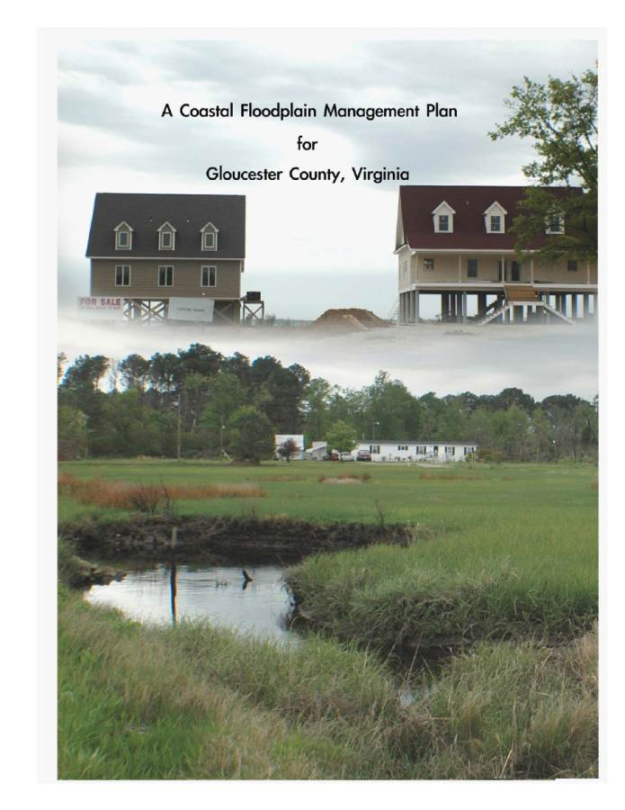
Photo by Gary R. Perez
A Coastal Floodplain Management Plan
for Gloucester County, Virginia
Planning Committee Members
Anne Ducey-Ortiz, Gloucester County Director of Planning
Jay Scudder, Former Gloucester County Director of Planning
Paul Koll, Gloucester County Building Official
Mark Westfall, Former Gloucester County Emergency Management Coordinator
Christopher Perez, Gloucester County Planner I
Dr. Mort Gulak, Professor of Urban Studies and Planning at Virginia
Commonwealth University (VCU)
Dr. Avrum Shriar, Professor of Urban Studies and Planning at Virginia
Commonwealth University (VCU)
Adopted by Gloucester County Board of Supervisors on September 1, 2009.
A Coastal Floodplain Management Plan for Gloucester County
i
July 2009
Executive Summary
Purpose
The purpose of the plan is to analyze the causes of flooding in Gloucester County and
identify the vulnerabilities due to flooding within the community. The plan also
documents and analyzes the county’s existing flood management practices and provides
feasible solutions to strengthen the county’s overall flood management system, helping to
lessen the amount of damage caused by flooding.
During the development of this plan a standard 10-step process was followed. The 10
steps are based on the Federal Emergency Management Agency (FEMA) guidelines and
requirements for the Community Rating System (CRS) Program for the development of a
floodplain management plan.
Table 1: Community Rating System Planning Steps
Planning Process
1) Organize to Prepare the Plan
2) Involve the Public
3) Coordinate with Other Agencies
Risk Assessment
4) Assess the Problem
5) Assess the Hazard
Mitigation Strategy
6) Set goals
7) Review Possible Activities
8) Draft an Action Plan
Plan Maintenance
9) Adopt the Plan
10) Implement, Evaluate, and Revise
Source: FEMA, 2006
Organize to Prepare the Plan
At the beginning of this plan’s conception a six person planning committee was formed
to guide the planning process. The committee was made up of Paul Koll, Gloucester
County Building Official, Christopher Perez, Gloucester County Planner and then Urban
and Regional Planning Graduate Student at VCU, Dr. Mort Gulak and Dr. Avrum Shriar,
Professors of Urban Studies and Planning at VCU, as well as Jay Scudder, former
Director of Planning, and Mark Westfall, former Emergency Management Coordinator.
The committee initially convened on January 25, 2007 to discuss: the role of the
committee in the formation of the plan and to schedule follow up meetings to discuss the
plan’s progress. The committee also discussed the parameters of the plan, various
resources to aid in the risk assessment of the area, the agencies that needed to be
involved, the extent that the public would be involved, as well as the time frame for the
plan’s completion and projected adoption date.
During the initial research and data gathering phase of the plan, committee members
provided guidance and assistance as needed. The committee officially convened five
times throughout the year and between formal meetings the committee remained in

A Coastal Floodplain Management Plan for Gloucester County
ii
July 2009
contact through e-mail and phone. The second official committee meeting was held on
April 18, 2007 at which members discussed the work that had been done thus far. The
meeting also served as a brain storming session that provided suggestions for
improvements to existing ideas and suggested additional information that needed to be
included in the plan.
The third meeting, held on May 2, 2007, focused mainly on formulating goals and
solidifying objectives for the plan. During the first week in August 2007, a working
draft of the plan was given to all the committee members for review, and by September
2007, each member had provided feedback. By December 2007 a draft plan was
completed. The draft plan was presented to the Gloucester County Planning Commission
in April 2008. The Commission asked to review the plan once it had been accepted by
the ISO review board. The ISO review was received late April 2008, and the draft plan
was revised per ISO recommendations and suggestions. In May 2009, the Board of
Supervisors passed a resolution directing the Planning Department with assistance from
the Department of Codes Compliance to develop a Floodplain Management Plan for the
County by November 2009. The resolution also approved the formation of an annual
review committee whose 16 members will be made up of landowners, residents and
business owners of the flood prone area, BOS members, and staff from various county
offices. For a copy of the resolution, see Appendix H.
Public Involvement
During the development of this plan three public meetings were held in the community
for the purpose of informing the public and gaining feedback from Gloucester County
citizens about the current coastal flooding problem in their county, the first on May 10,
2007, the second on October 23, 2007, and the third on May 14, 2009. Citizens of
Gloucester County were notified of the public meetings via advertisements in the
Gloucester Mathews Gazette Journal (a local newspaper), see Appendix G. Four of the
six planning committee members (County Staff) were the official presenters at the
meetings.
The meetings were held at Achilles Elementary School, a school that is located in the
floodplain and in close proximity to the majority of the county’s repetitive loss areas.
During the first two meetings, a Flood Protection Questionnaire (see Appendix A) was
dispensed to survey attending citizens about their personal experiences with flooding in
the community, as well as to gauge their general level of education about the flooding
hazard of the area. Attending residents were notified of the county’s current involvement
with the National Flood Insurance Program (NFIP) and its CRS program, a brief history
of the county’s flooding problem, the existing flood mitigation strategies as well as
suggested recommendations in the plan. Open discussion was encouraged in order to
formulate new policies and strengthen existing strategies that would improve the area’s
flooding problem. For the minutes from the first meeting, see Appendix G.
At the third public meeting the Draft Floodplain Management Plan was presented,
reviewed, and discussed. The draft plan was available for citizen review through the
County website, as well as in the Planning Department. At the meeting each of the
suggested recommendations in the plan was discussed. Citizen comment and suggestions
were obtained from this meeting and utilized to revise the draft plan before presenting the
plan to the Planning Commission for review at their June 2009 meeting. At the meeting
the Planning Commission asked to set a Public Hearing for the July 2, 2009 meeting.

A Coastal Floodplain Management Plan for Gloucester County
iii
July 2009
During the July 2, 2009 meeting of the Planning Commission a public hearing was held
regarding the proposed Floodplain Management Plan. The Planning Commission voted
11-0 (with two absent) to forward the Plan to the Board of Supervisors with a
recommendation of approval. At the September 1, 2009 meeting of the Board of
Supervisors a public hearing was held regarding the proposed plan.
Coordination with Other Agencies
The plan has been developed with information from communications with the following
local, regional, state and federal agencies/ organizations. In April 2009, staff sent the
draft plan to all of the following agencies (except agencies in italics) requesting
comments. Comments were obtained from these agencies and utilized to revise the draft
plan before presenting the plan to the Planning Commission for review at their June 2009
meeting.
Gloucester County
Department of Planning
Department of Codes and Compliance
Department of Emergency Services
Department of Information Technology (GIS)
Department of Community Education
Department of Public Utilities
Department of Public Works
Department of Social Services
Sheriff’s Office
Public Library
Volunteer Fire and Rescue (Abingdon and Gloucester)
Non Profit Organizations
Bay Aging, Inc.
Friends of the Library
Private Companies
Dominion Virginia Power
Neighboring Communities
York County
City of Portsmouth
Regional Agencies
Middle Peninsula Planning District Commission
Tidewater Soil Water Conservation District
Hampton Roads Emergency Management Committee
State Agencies
Virginia Department of Conservation & Recreation
Virginia Department of Transportation
Virginia Department of Emergency Management
Virginia Department of Environmental Quality
Virginia Department of Health
Federal Agencies
FEMA’s Community Rating System (Insurance Services Office Inc)
Federal Emergency Management Agency, Region III (VA)

A Coastal Floodplain Management Plan for Gloucester County
iv
July 2009
Data Analysis
To determine the causes and areas most affected by flooding within the county, the plan
documents and analyzes:
Past seasonal coastal storm events that have affected the county and nearby areas
County Storm Surge Map
County Flood Insurance Rate Maps (FIRM)
County elevation profiles
Complete assessment of community vulnerabilities requires analysis of the following
factors:
Repetitive loss properties
Pre - FIRM structures in Special Flood Hazard Area (SFHA)
Vulnerable populations
Safety hazards
Critical facilities
Recommendations
The plan documents and analyzes the existing mitigation strategies for Gloucester County
and provides feasible recommendations for improving of these tactics. The plan
recommends that the county:
Adopt the Floodplain Management Plan to help strengthen the community’s
mitigation activities as well as to help lower insurance premiums for policy holders
(Section 5.3b).
Utilize the road improvement priority list to prioritize the allocation of scarce
resources to projects that support the largest number of unmitigated pre-FIRM
structures in the SFHA (Section 5.1b1).
Continue to monitor State Route 649, Maryus Road and if washouts from flooding
persist, improve the road to withstand coastal floodwaters by elevating damaged
sections and installing more appropriate roadway drainage crossings (Section
5.1b2).
Develop a semiannual ditch maintenance program for the southeastern portion of the
county (Section 5.1b3).
Keep detailed records of which roads in the county flood, how often and to what
extent (Section 5.1b4).
Consider permanent road signage with gauges that mark high water on frequently
flooded roads in the county (Section 5.1b5).
Seek to acquire properties through a voluntary program according to the priority list
in order to increase the amount of land preserved as open space, and to reduce the
amount of flood damage to new and existing properties in the flood prone areas of
the community (Section 5.3a).
A Coastal Floodplain Management Plan for Gloucester County
v
July 2009
Adopt a voluntary cellular telephone directory, which will work in unison with the
existing reverse 911 system (Section 5.5b1).
Install an outdoor emergency warning system within the flood prone southeastern
portion of the county (Section 5.5b2).
Send annual mass mailings with specialized information relating to property
protection, flood safety and flood insurance to owner of property in a flood zone
(Section 5.4a).
Provide a central location where general information on flood preparedness, flood
insurance, and floodplain management is easily accessible to the public in a hard
copy format (Section 5.4b).
Advertise the technical assistance opportunities provided by County in relation to
flood mitigation and preparedness, preferably in the same central locations where
other flood-hazard information is available (Section 5.4c).
Assist residents with existing fuel, oil and propane tanks that are not secured by
providing tie-down assistance (Section 3.4).
Examine the public health, safety and economic impacts associated with the increased
use of alternative septic systems in flood prone areas (Section 3.4).
Evaluate the potential impact of climate change on the community, particularly with
respect to its wetlands, and consider potential management options (Section 2.4).
Develop a Storm Water Management Plan that will help regulate storm water
throughout the county (5.6a).
Continue to zone for low density development and encourage residential clustering
within flood-prone areas (Section 5.2a).
Continue to enforce building regulations throughout the county (Section 5.2b).
Continue to require and enforce the provisions of the Floodplain Management
Ordinance (Section 5.2c).
Continue to enforce the Chesapeake Bay Preservation Ordinance, Erosion and
Sediment Control Ordinance, and the Wetland Zoning Ordinance (Section 5.6).
Continue to regularly inspect the County’s high hazard dam and perform regular
maintenance on it, as well as continue participation in the National Dam Safety
Program (Section 5.1a).
Continue to utilize its existing severe weather and hazard identification process
(Section 5.5b).
This plan does not commit Gloucester County to any of the suggested mitigation remedies; it is merely a
guide for local officials to use when making decisions about floodplain management within the community.
A Coastal Floodplain Management Plan for Gloucester County
vi
July 2009
Table of Contents
Executive Summary….…..…………….………………………………………………i
Purpose……………………..………………………...…………….…………………i
Organize to Prepare the Plan……………………..………………………...………...i
Public Involvement ……………………..………………………...…………….…...ii
Coordination with Other Agencies……………………..………………………...…iii
Data Analysis ……………………..………………………...…………….………...iv
Recommendations……………………..………………………...…………….……iv
1. Introduction...………………………………………………………………….……...1
2. Assess the Hazard: Potential Causes of Flooding in Gloucester County…..………3
2.1 Coastal Flooding……………………………….…………...………….………...3
2.2 Storm Surge……………………..………………………...…………….……….6
2.3 History of Hurricane Events in the area…..……………………………………..7
2.4 Climate Change…………………………………………………………………9
2.5 Riverine Flooding……..………………………………………………………...9
2.6 Dam Impoundments……………….…………………………………………...10
3. Assess the Problem: Vulnerability of the Community…….………………………13
3.1 Property Damage ……..….…………………………………….……………….13
3.2 Vulnerable Populations………………………………………………………….22
3.3 Critical Facilities…….………………………………………………………..…23
3.4 Safety and Health Hazards………………………………………………………28
4. Goals……………………………………………………………………………..……32
5. Hazard Mitigation Activities……………………………………………………...…33
5.1 Structural Improvement Activities ………………………………………...……33
The Beaverdam Reservoir………………………………………....……….…33
Road Improvements…………………………………………………….…….34
5.2 Preventative Activities ………………………………….………………………42
Planning and Zoning………………………………………………….………43
Building Regulations………………………………………………...……….47
Floodplain Development Regulations..….……………………….…………..47
5.3 Property Protection Activities………………………….…………….………….48
Elevation and Acquisition Projects ……………………….…….……………49
Purchasing Flood Insurance…….…………………………………………….52
5.4 Public Information Activities……………………………………………………53
Community Educational Outreach Project……………………………...……53
Public Libraries and the County Website…………………………………….55
Technical Assistance and Map Information……………………………….…56
5.5 Emergency Services Measures…………………………………………….……56
Hazard Identification…………………………………………………………57
Warning……………………………………………………………………….57
5.6 Natural Resource Protection …………...……………….………………………61
6. Action Plan……………………………………….…………………………………..62
7. Plan Adoption………………………………………………………………………...68

A Coastal Floodplain Management Plan for Gloucester County
vii
July 2009
8. Plan Maintenance…………………………………………………………………….69
References……………………………………………………………………………...70
Appendices……………………………………………………………………………...75
Appendix A: Flood Protection Questionnaire…………………………………….…75
Appendix B: Middle Peninsula District Committee Structural Vulnerability Study..76
Appendix C: VDOT Elevation Study on Select Roads in Gloucester County……...79
Appendix D: Saffir-Simpson Hurricane Damage Scale…………………………….81
Appendix E: Gloucester County Growth Rate……………...……………………….82
Appendix F: VDOT Road Closure Data for Gloucester County (1999 – 2006)……83
Appendix G: Documentation of the Planning Process……………………..…….... 84
Section 1: Floodplain Management Plan Planning Committee Members……….84
Section 2: Time Table of Events during the Planning Process of the Plan………84
- Public meeting newspaper advertisement clippings and articles
- Planning Commission Meeting Minutes
Appendix H: Board of Supervisor’s Resolution Authorizing the Preparation of a
Floodplain Management Plan and Establishing a Planning Committee 93
Appendix I: Emergency Service Location Map……..……………………..…….....95
List of Tables
Table 1: Community Rating System Planning Steps………………………………...i
Table 2: Storms within 65 nm of Gloucester County between 1980 and 2007……..4
Table 3: Storms within 100 nm of Gloucester County between 1980 and 2007…....5
Table 4: Dams in Gloucester……………………………………………………....11
Table 5: Repetitive Loss Areas……….……………………..……………………..21
Table 6: Road Closures Due to Flooding from 1999 - 2006…………………..…..26
Table 7: Road Closures Due to Flooding from 1999 - 2006…………………..…..37
Table 8: Zone Lot Size Requirements………………………….……………….…46
Table 9: Development Provisions for Flood Districts………….………..…………48
Table 10: Suggested Repetitive Loss Acquisition Priority List…..………..……….52
List of Figures
Figure 1: Gloucester County Regional Context………………………………………1
Figure 2: Storms within 65 nm of Gloucester County between 1980 and 2007……..4
Figure 3: Storms within 100 nm of Gloucester County between 1980 and 2007…...5
Figure 4: A Nor’easter off the United States Eastern Coast…………………………6
Figure 5: Illustration of a Storm Surge ……………………………………….……..6
Figure 6: Beaverdam Flood Inundation Map….…………………………………...12
Figure 7: Typical landscape of SE Gloucester County ……………………………13
Figure 8: Gloucester Elevation Profile...…………….………………………....…..14
Figure 9: Gloucester County Flood District Map..…………………………………16
Figure 10: Gloucester County Census Block Groups……………………………….18
Figure 11: Gloucester County Storm Surge ………………………………………..19
Figure 12: Critical Facilities in the Southeastern Portion of Gloucester County…..27
Figure 13: Depiction of VDOT Prescribed Roadway Section ……………………..34
Figure 13a: Depiction of Roadway Section at 2339 Low Ground Road……………35
Figure 13b: Depiction of Roadway Section at Haywood Seafood on Maryus Road.35
Figure 13c: Depiction of Roadway Section at 10021 Maryus Road………………..35
Figure 14: Roadway Drainage Crossing in the Southeastern Portion of the county 36
Figure 15: Roadside Ditch in the Southeastern Portion of the county…….………..36

A Coastal Floodplain Management Plan for Gloucester County
viii
July 2009
Figure 16: Example of Damaged Roadway Drainage Crossing……………………36
Figure 17: Example of a Clogged Culvert Caused by a Wide Inlet………………...36
Figure 18: Culvert Inlet that Maintains Natural Channel Configuration……………37
Figure 19: Gloucester County Road Prioritization Map……………………..………40
Figure 20: Example of a Roadside Flood Gauge……………………………...……..42
Figure 21: Gloucester County Zoning Map…………………………………………44
Figure 22: Gloucester County Zoning (Southeastern Portion Inset) Map………..…45
Figure 23: Clustering Inland…………………………………………………..…….46
Figure 24: Clustering on the Coast……………………………………………...…..47
Figure 25: Typical Residential Elevation within a VE and V Zone…………….…..49
Figure 26: Typical Residential Elevation within an AE and A Zone…………….…49
Figure 27: Emergency Siren Proposed Locations Map……………….…………….60
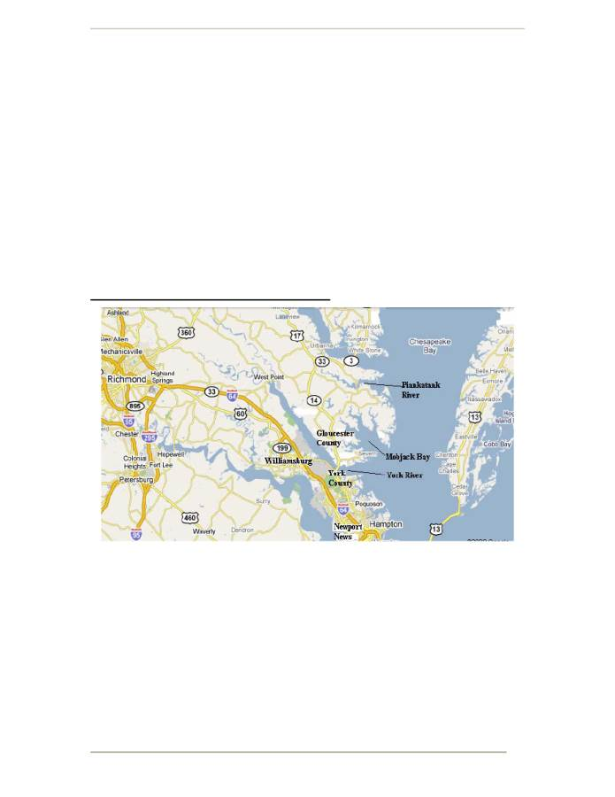
A Coastal Floodplain Management Plan for Gloucester County
1
July 2009
1. Introduction
Gloucester County is located in the southeastern portion of Virginia’s Middle Peninsula
within close proximity of the Chesapeake Bay. Half of the county’s 140,364 acres are
bounded by two tidal rivers and the Mobjack Bay: York River on the south and the
Piankatank River on the north (Figure 1). The county serves as a bedroom community
for neighboring Virginia Peninsula localities (Newport News, Hampton, York County,
and Williamsburg). According to the 2000 census, there are approximately 14,494
housing units in the county and approximately 34,780 residents. During a decennial
growth spurt in the 1980s, there was pressure to develop on the area’s low lying coastal
land, much of which has elevations ranging from zero to five feet above mean sea level.
Gloucester County’s proximity to the Chesapeake Bay and numerous tidal rivers, coupled
with the area’s low elevation, create an area with high risk of coastal flooding in the
event of a seasonal coastal storm. Depending on the storm’s magnitude and proximity to
the county, coastal flooding can threaten public safety and local economic viability
(FEMA 1987, 2-4).
Figure 1: Gloucester County Regional Context
Source: Google Maps
Over the years the county has taken many steps to protect its citizens from the area’s
flooding hazards. The county has implemented a number of preventative measures,
property protection policies, public information activities, and emergency service
measures in an attempt to decrease the flood hazard’s impact on the community.
From 1983 to 1987, the Federal Emergency Management Agency (FEMA) investigated
the flood hazards in Gloucester County. This investigation yielded the county’s Flood
Insurance Study (FIS) and Flood Insurance Rate Map (FIRM), both of which are used to
develop flood risk data for the community and establish flood insurance rates throughout
the region. The FIRM depicts flooding during a 100-year storm event (storms that have a
1% chance of being equaled or exceeded in any given year). The FIRM accounts for
both storm surge driven flooding, as well as flooding caused by heavy rainfall. The map

A Coastal Floodplain Management Plan for Gloucester County
2
July 2009
provides base flood elevations for the entire county derived from a detailed hydraulic
analysis of the area described in the FIS. The map also provides flood zone designations
for the entire county describing the type of flooding experienced.
In 1987, Gloucester became a participating community in FEMA’s National Flood
Insurance Program (NFIP); this enabled citizens to obtain federally backed flood
insurance. Via participation in the NFIP, Gloucester was eligible to join the Community
Rating System (CRS) program. While participation in the CRS program is voluntary, the
benefits for citizens in participating localities are numerous. Under the program, flood
insurance premiums are modified based on a point system which calculates the
community’s efforts to reduce future flood damage in the area beyond the minimal
national standards. These points are used to calculate a community’s “Class Rating”; the
rating is based on a scale of ten: 10 rating being the worst and 1 rating being the best. In
1994, FEMA conducted an analysis of the county’s floodplain management efforts, and
in 1995 awarded the County a Class 9 rating in the CRS program. Currently the rating
directly affects the annual premiums of approximately 1,528 flood insurance policy
holders within Gloucester County by decreasing premiums 5 percent. Due to the amount
of repetitively flooded properties in the county, adoption of a floodplain management
plan is required in order to continue to be eligible for the CRS program. To gain further
reductions in flood insurance policy premiums the county must gain credits that will
qualify the locality for a lower CRS rating. One method of acquiring CRS credit is
through the development of a floodplain management plan for the county.
The purpose of this plan is to document and analyze the county’s existing flood
management practices and provide feasible recommendations to strengthen the county’s
overall flood management system, which may lessen the amount of damage caused by
flooding.
A Coastal Floodplain Management Plan for Gloucester County
3
July 2009
2. Assess the Hazard: Potential Causes of Flooding in Gloucester County
2.1 Coastal Flooding
The county is threatened year-round by three major seasonal coastal storm events:
hurricanes, tropical storms, and nor’easters – all of which, historically, have been the
main causes of coastal flooding in the county. Nationwide besides fire, coastal flooding
causes nearly 90% of Presidential Disaster Declarations. This type of flooding is
typically a result of storm surge, wind driven waves, and heavy rainfall.
A hurricane is the most severe type of storm that can affect Gloucester County bringing
with it extremely high winds, large amounts of rainfall, and storm surge. The storm surge
caused by a hurricane carries with it the greatest potential to cause damage to coastal
communities because of its ability to travel inland. Hurricanes are most likely to affect
the region from June to November (FEMA 1987, 5).
Hurricanes and Tropical Storms
Hurricanes and tropical storms are closely related events being differentiated by their
wind speed. Hurricane intensity is tracked and measured by the National Oceanic
Atmospheric Association’s (NOAA) National Hurricane Center (NHC) in Miami, Florida
and they are graded using the Saffir-Simpson Hurricane Damage Scale (see Appendix D).
Tropical storms are upgraded to hurricanes if sustained wind speeds reach 74 mph. In
1987, the Norfolk District of the U.S. Army Corps of Engineers tracked all the tropical
storms of hurricane force which passed within 250 miles of the county; the average was
determined to be one storm per year (FEMA 1987, 3-4).
The National Hurricane Center uses the measurement of a 65 nautical mile (nm) radius to
signify that a particular location has experienced a direct hit from a storm, and the 100
nm radius to show events that narrowly missed the area but still had an impact through
wave action and strong winds. The two figures below show every major storm event that
has passed within close radius of Gloucester County between 1980 and 2007. Figure 2
and Table 2 show storms that passed within a 65 nm radius of the county:
Figure 3 and Table 3 show storms that passed within a 100 nm radius of the county.
Within the 27 year time frame, twice as many storms were classified as having narrowly
missed Gloucester County than those directly hitting the county.
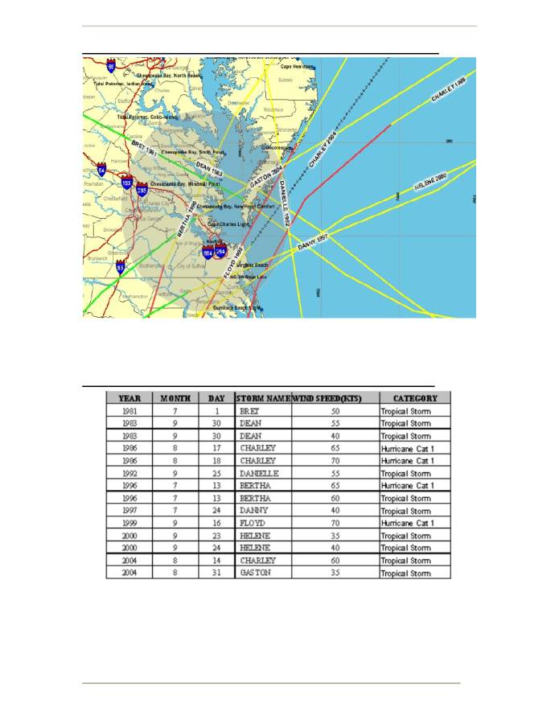
A Coastal Floodplain Management Plan for Gloucester County
4
July 2009
Figure 2: Storms within 65 nm of Gloucester County between 1980 and 2007
Source: NOAA CSC Hurricane Mapping Tool
Note: Category 1-2 Hurricane (shown in Red Lines), Tropical Storm (shown in Yellow Lines, Green Lines, and
Black Thatched Lines)
Table 2: Storms within 65 nm of Gloucester County between 1980 and 2007
Source: NOAA CSC Hurricane Mapping Tool
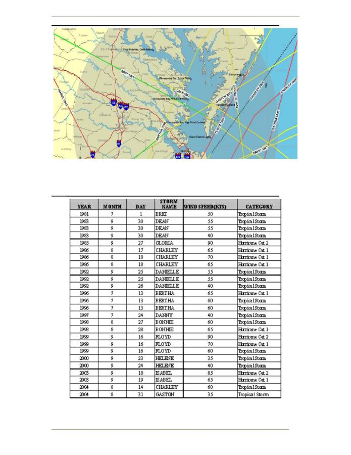
A Coastal Floodplain Management Plan for Gloucester County
5
July 2009
Figure 3: Storms within 100 nm of Gloucester County between 1980 and 2007
Source: NOAA CSC Hurricane Mapping Tool
Note: Category 1-2 Hurricane (shown in Red Lines), Tropical Storm (shown in Yellow Lines, Green Lines, and
Black Thatched Lines)
Table 3: Storms within 100 nm of Gloucester County between 1980 and 2007
Source: NOAA CSC Hurricane Mapping Tool
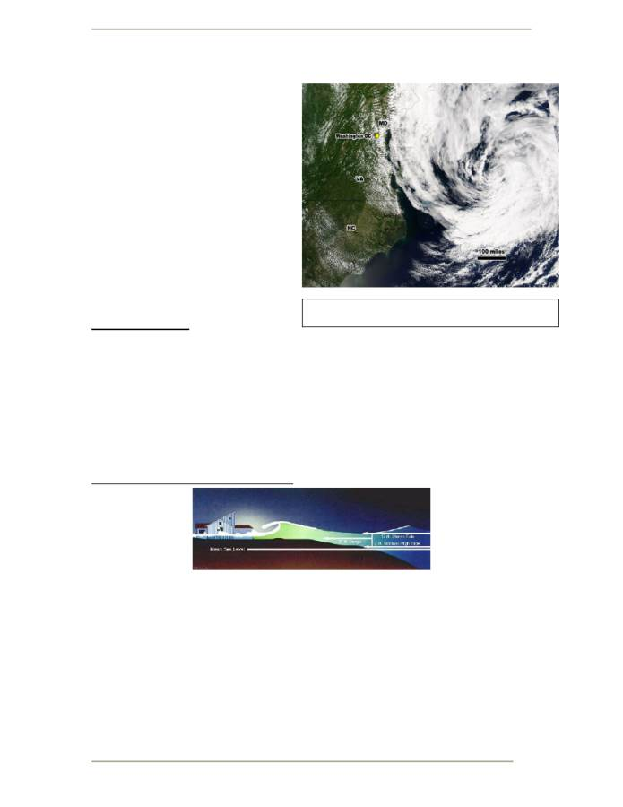
A Coastal Floodplain Management Plan for Gloucester County
6
July 2009
Nor’easters
Another type of major storm event that
causes severe damage to the county is
the nor’easter (Figure 4), also known as
a “White Hurricane”. This type of storm
originates with little or no warning and
is found along the middle and northern
Atlantic coast. Flooding from a
nor’easter tends to be caused by wave
action combined with wind and
restricted to the coastal zone.
These storms are most frequent in the
winter months, but can occur at any time
of the year. They are most prevalent in
Virginia between September and April
(Middle Peninsula Planning District
Commission, 2005).
2.2
Storm Surge
As hurricanes and tropical storms pass over or near the coast atmospheric pressure drops,
causing a large volume of sea water to build up, eventually being pushed ashore by the
storm’s winds causing a storm surge (Figure 5). The wind is an over-riding factor in
storm surge. In the case of Gloucester County, strong East and Northeastern winds can
push water from the Chesapeake Bay into the mouth of the York and Rappahannock
Rivers and Mobjack Bay, flooding much of the county’s low-lying areas (Middle
Peninsula Planning District Commission, 2005). The total storm surge height depends on
the storm’s intensity and proximity to the county, and fluctuation in astrological tides.
Figure 5: Illustration of a Storm Surge
Source: NOAA NWS
When a hurricane or tropical storm makes landfall at high tide, the storm surge and the
added water from the tidal fluctuation combine to create a “storm tide”. In Gloucester
County, tidal waters normally fluctuate twice daily from 1.2 feet above mean sea level to
1.2 feet below mean sea level (FEMA 1987, 6). If a severe hurricane were to make
landfall during high tide, an additional 1.2 feet of water would be added to the highest
storm surge possible, which could create a storm tide of 16.2 feet (Rygel, 2005).
Nor’easters, like hurricanes and tropical storms, can dump heavy amounts of rain and
produce hurricane-force winds that push large amounts of sea water inland. However,
this is not a true storm surge because a nor’easter does not cause an extreme drop in
atmospheric pressure like that of a hurricane or tropical storm. Low atmospheric pressure
Figure 4: A nor'easter off the United States Eastern Coast.
Source: NASA/Goddard Space Flight Center
A Coastal Floodplain Management Plan for Gloucester County
7
July 2009
and high winds are responsible for the ocean water’s ability to build up and eventually be
pushed ashore; however, unlike a hurricane or tropical storm that makes landfall and
slowly looses strength, a nor’easter can linger off-shore, often for many days, racking the
coastline with powerful winds, strong waves, and large amounts precipitation (ice and
rain). Flooding caused by a nor’easter is unlike flooding caused by a hurricane or
tropical storm, because it can last for many days through many tidal cycles with the most
severe flooding taking place during high tide. Flooding from a hurricane or tropical
storm, on the other hand, is of shorter duration, rarely lasting more than one tidal cycle.
In the event of a nor’easter, there could be multiple high tide levels being added to the
storm surge level. For instance, if the storm lasted through three tidal cycles the storm
tide could be as high as 18.6 feet (Rygel, 2005).
If a severe hurricane or nor’easter comes within 65 nm of the county, the event would be
classified as a direct hit and deemed a natural disaster. This plan is not a disaster
mitigation plan aimed to protect residents from the effects from severe hurricanes or
nor’easters. Gloucester County’s Emergency Operations Plan and Hurricane Response
Plan aim to provide an effective and organized response from the local government in the
event of a disaster of such caliber.
2.3 History of Hurricane Events in the Area
The August 1933 hurricane was born off the Cape Verde Islands and reached Category 4
strength, but weakened to a Category 2 before making landfall in Nags Head, North
Carolina. The storm surge caused by the hurricane caused 18 deaths and $79 million in
damages in Virginia. The entire Tidewater area was paralyzed by the storm through loss
of communication, electricity, water service and road access (Virginia Department of
Emergency Management). According to a 1987 report written by FEMA this hurricane
was the worst ever recorded along the Middle Atlantic coast:
“Norfolk reported the greatest 24-hr rainfall in its history,
a fall of 6.64 inches. In Gloucester County, widespread
damage to homes, cropland, and livestock resulted from the
tidal flooding that reached an elevation of approximately
8.8 feet at Gloucester Point. Wells were fouled by the salt
water, and the soil saturated by the salt intrusion required
several years to return to its former productive state”
(FEMA 1987, 5-8).
The September 18, 1936 hurricane reached Category 3 and came within 25 miles of
Virginia Beach, causing $500,000 in damages to homes in the vicinity (Virginia
Department of Emergency Management). The storm is documented in FEMA’s Flood
Insurance Study of Gloucester:
“…gale force winds caused much damage throughout the
lower Chesapeake bay areas… At Gloucester Point, the
elevation of flooding reached 6.4 feet” (FEMA 1987, 5-8).
On October 14, 1954, Hurricane Hazel devastated Virginia with a toll of 13 deaths and
state-wide damages estimated at $15 million (Virginia Department of Emergency
Management). The storm is documented in FEMA’s Flood Insurance Study of
Gloucester County:

A Coastal Floodplain Management Plan for Gloucester County
8
July 2009
“Hurricane Hazel caused moderately high tides. The tidal
flooding during this hurricane caused considerable salt
damage due to the dry antecedent soil conditions. There
was also severe damage from the wind and salt spray”
(FEMA 1987, 5-8).
On August 12, 1955, Hurricane Connie made landfall near Cape Lookout, NC and caused
16 deaths and $1 million in damages to Virginia Beach and various parts of the Tidewater
waterfront (Virginia Department of Emergency Management). The storm is documented
in FEMA’s Flood Insurance Study of Gloucester County:
“The surge occurred at the time of the astronomical low
tide in this area, and the resultant tide was approximately
4.3 feet at Gloucester Point. The extremely heavy rainfall
of approximately 9 inches in 24 hours with this hurricane
added to the damage inflicted by the tidal flooding”
(FEMA 1987, 5-8).
“Disastrous flooding and high waves occurred all along
the Atlantic Seaboard from New York to Florida. Great
destruction was caused by high waves and breaks
superimposed on high tides. The waves and breakers
undermined and collapsed buildings; eroded the beaches,
roads, and sand dunes; interrupted communication and
power lines, and damaged agricultural lands... The
elevation of flooding reached 5.8 feet at Gloucester Point”
(FEMA 1987, 5-8).
In more recent years, on July 13, 1996, Hurricane Bertha devastated the local population
by making landfall near Cape Fear and passing over Suffolk and Newport News,
Virginia. The storm injured nine people and caused several million dollars in damages
(Virginia Department of Emergency Management).
September 16, 1999, Hurricane Floyd cost Virginia more than $255 million in damage;
fallen trees killed two people and closed nearly 300 roadways. Flooding alone caused
$30 – $ 40 million worth of damage. Rainfall in some areas was 12 to 18 inches
(Virginia Department of Emergency Management).
September 18, 2003, Hurricane Isabel made landfall near Ocracoke Island, North
Carolina. Across Virginia, there was $625 million worth of damage and 20 deaths caused
by the storm (Virginia Department of Emergency Management). The hurricane created a
tidal surge of 6.4 feet at Gloucester Point with wind gusts up to 85 miles per hour
throughout Gloucester County (FEMA 2007, 1).
September 1, 2006, the remnants of Tropical Storm Ernesto generated strong winds,
heavy rainfall, and storm surge. The storm brought 5 to 8 inches of rainfall and severe
flooding to eastern Virginia. Communities adjacent to the York River and northward to
the Rappahannock River received tides that were 4 to 5 feet above normal, combined
with 6 to 8 foot high waves. Flooding and high winds caused the death of seven people
and an estimated $118 million in damages. Significant damage was sustained to homes,
A Coastal Floodplain Management Plan for Gloucester County
9
July 2009
piers, boats, and marinas across the area. Power outages were widespread across the
area (Virginia Department of Emergency Management).
2.4 Climate Change and Sea Level Rise
It has been widely studied and debated that our planet’s temperature is rising and that this
change in temperature is contributing to higher sea levels through melting of the Arctic
ice caps and glaciers. If the earth’s temperature is rising, this will have an effect on
ocean temperatures as well. An increase in ocean temperature will likely increase the
frequency and severity of coastal storms. Combined these factors mean that even less-
severe coastal storms may produce more damaging floods.
Scientists at the Virginia Institute of Marine Science (VIMS) compared the affects
observed in the Hampton Roads area caused by the August 1933 hurricane and 2003’s
Hurricane Isabel, which was a category one storm when it hit Virginia. Despite being a
categorically weaker storm, Isabel brought water levels that were comparable to those
seen in the 1933 storm. Data shows that the monthly mean sea level during Isabel was
approximately 1.4 feet higher than the mean sea level from seventy years prior (Pizer,
2009).
NOAA scientists have calculated that sea level in the region has risen an average of about
four millimeters per year relative to the land since 1928. A recent report by the U.S.
Climate Change Science Program, suggests an additional sea-level rise of more than three
feet by 2100(Pizer, 2009).
The Middle Peninsula Planning District Commission (MPPDC) and VIMS are currently
being funded by the Department of Environmental Quality’s Coastal Zone Management
Program to study and map the predicted sea level rise for the Middle Peninsula. These
maps will be available in the Fall of 2009. When more data becomes available the
County should evaluate the potential impact of climate change on the community,
particularly with respect to its wetlands, and consider potential management options.
2.5 Riverine Flooding
Riverine flooding is defined as the overflow of rivers, streams, drains, and lakes due to
excessive rainfall, rapid snow melt, rapid ice melt or a combination of all three. This
type of flooding involves the partial or complete inundation or normally dry land areas.
It differs from coastal flooding, which is caused by a combination of rain, storm surge
and wave action that affects primarily coastal areas (Webster County, 2008).
Approximately 60% of Virginia’s river flooding is the result of flash flooding from
tropical systems passing over or near the state. Riverine flooding also occurs because of
successive rainstorms. Rainfall from any one storm may not be enough to cause a
problem, but with each successive storm’s passage over the basin, rivers rise until
eventually they overflow their banks. If this occurs in late winter or spring, melting of
snow in the mountains can produce additional runoff that can compound flooding
problems (Watson, 2005).
There are several types of Riverine flooding including headwater, backwater and interior
drainage flooding. Headwater flooding results from significant rain events that occur at
A Coastal Floodplain Management Plan for Gloucester County
10
July 2009
the upper reaches of a watershed that then flow downstream within a short period of time.
Backwater flooding results when the lower portion of a river or stream is blocked by
debris or backed up due to a storm surge along the coast. Interior drainage flooding
results when a dam gives way and the water being held in the impoundment is released
all at once to the downstream receiving channel (Webster County, 2008).
Periodic flooding of lands adjacent to non-tidal rivers and streams is a natural and
inevitable occurrence. When stream flow exceeds the capacity of a normal water course,
some of the above-normal stream flow spills over into adjacent lands within the
floodplain. Riverine flooding is a function of precipitation levels and water runoff
volumes within the watershed the stream or river (NCDCCPS, 2007).
The major rivers that surround Gloucester County are tidal in nature and they serve as
estuarine tributaries of the Chesapeake Bay. Flood hazards vary due to the river’s
location and the type of storm event taking place.
2.6 Dam Impoundments
All dams in Virginia are subject to the Virginia Dam Safety Act and Dam Safety
Regulations unless specifically excluded. The Virginia Department of Conservation and
Recreation (VDCR) – Division of Dam Safety is the state agency responsible for
enforcing the Virginia Dam Safety Act and the Virginia Soil and water Conservation
Board’s Virginia Impounding Structure Regulations and oversees the issuance of
Operation and Maintenance Certificates for regulated dams.
In September 2008, Virginia’s dam regulations were amended, these amendments aim to
treat all dam owners similarly and fairly in accordance with the regulations, increase
awareness of dams and their potential impacts within localities and their citizens as well
as help to improve the administration of the program. Dams are classified with a hazard
potential depending upon downstream losses anticipated in the event of a failure. The
hazard potential is unrelated to the structural integrity of a dam but rather it is directly
related to potential adverse downstream impacts should the dam fail.
The hazard potentials are classified in the following manner:
High - dams that upon failure would cause probable loss of life or serious
economic damage.
Significant – dams that upon failure might cause loss of life or appreciable
economic damage.
Low – dams that upon failure would lead to no expected loss of life or significant
economic damage. This classification includes dams that upon failure would
cause damage only to property of the dam owner, identified as Low Hazard
(Special Criteria), which has fewer requirements for regulatory compliance than
Low Hazard dams.
Currently there are 11 dams listed in Virginia’s inventory of dams within Gloucester
County: table 4 lists each dam, their respective hazard potential class, height, as well as
the river each is located on. Of these dams only one is ranked as High Hazard:
A Coastal Floodplain Management Plan for Gloucester County
11
July 2009
Beaverdam Reservoir Dam, which is owned, operated and maintained by Gloucester
County. The other 10 dams are privately owned and maintained and have either a Hazard
Potential Class of Low Hazard or Significant Hazard. These 10 dams are currently not
regulated by the dam safety program. Because of the above mentioned high hazard dam,
later sections of this plan will primarily focus applicable mitigation activities specifically
to the Beaverdam Reservoir Dam. Figure 6 shows the Beaverdam Reservoir Dam Flood
Inundation Map which was updated in 2009 and depicts the homes that may be inundated
in the event of a Sunny Day Dam Failure (SDDF)
1
and a Probable Maximum Flood
(PMF)
2
. The map shows 117 addressed buildings potentially inundated in a SDDF and
288 addressed buildings potentially inundated in a PMF dam failure (Emergency Action
Plan, 2009).
Table 4: Dams in Gloucester County
Name
Hazard Potential Class
Top
Height
River
Woodberry Farm Dam
Low Hazard
8
Jones Creek
Weaver Dam
Low Hazard
6
Jones Creek
Haynes Dam
Low Hazard
15
Carter Creek
Robins Dam
Significant Hazard
16
Wilson Creek
Cow Creek Dam
Significant Hazard
16
Cow Creek
Burke Dam
Significant Hazard
20
Burke Mill Stream
Cypress Shore Dam
Low Hazard
15
Tr-Piankatank
Haines Pond Dam
Low Hazard
9
Beaverdam Reservoir Dam
High Hazard
39
Beaverdam Creek
Wood Duck Pond Dam
Low Hazard
Leigh Lake Dam
12
Source: VDCR April 4, 2009
There is no established database in Virginia of historic dam failures. Most dam failures
occur due to a lack of maintenance of the dam facilities in combination with excessive
precipitation events, such as seasonal coastal storms or thunderstorms.
Dam failures pose risks when there are large populations located downstream from the
dams. On-going dam inspections and Virginia’s participation in the National Dam Safety
Program maintained by FEMA and the U.S. Army Corps of Engineers serve as
preventative measures against dam failures.
Failure of dams may result in localized major impact. Impact includes loss of human life,
economic loss, lifeline disruption, and environmental impact such as destruction of
habitat. Secondary impacts from dam failure include flooding of surrounding areas.
1
Sunny Day Damn Failure means the failure of an impounding structure with the initial water level at the
normal reservoir level, usually at the lowest un-gated principal spillway elevation or the typical operating
water level.
2
Probable Maximum Flood means a flood that might be expected from the most severe combination of
critical meteorologic and hydrologic conditions that are reasonably possible in the region.
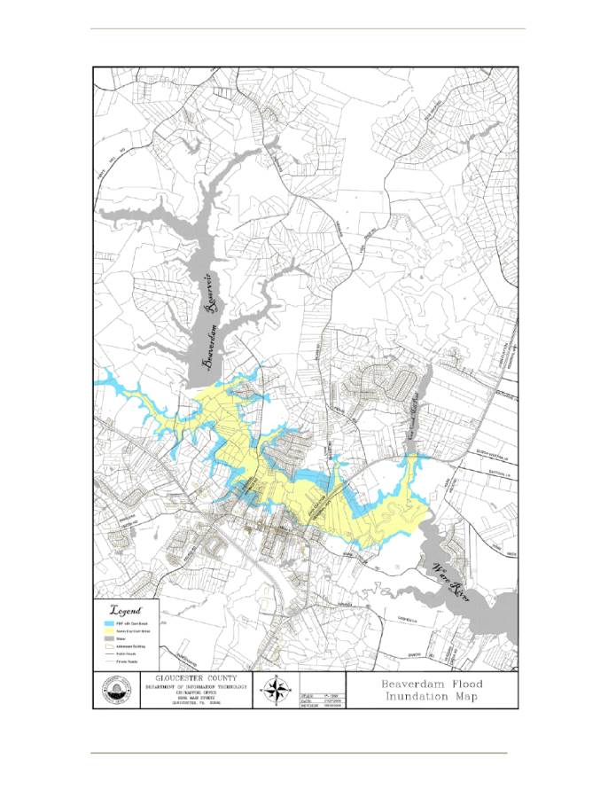
A Coastal Floodplain Management Plan for Gloucester County
12
July 2009
Figure 6
Source: County Base GIS layers were provided by United States Census Bureau, the Built Structure layer (April
2009) was provided by Gloucester County DIT, and the Innundation Area layer was provided by Wiley &
Wilson 2008.
A Coastal Floodplain Management Plan for Gloucester County
13
July 2009
3. Assess the Problem: Vulnerability of the Community
3.1 Property Damage
Elevation Profile of Gloucester County
Along its western and northwestern boundaries, Gloucester County has a maximum
elevation of 160 feet above sea level, while most of the eastern and southeastern lands
range from zero to five feet above mean sea level (Figure 8). For the southern portions of
the county, Route 17 can easily be used as an elevation marker due to its bisecting
qualities: it separates the majority of the low lying land on the southeastern portion of the
county from the higher elevated portions of land on the southwestern portions of the
county. The southern portion of Route 17 is constructed on land that is 20 to 40 feet
above sea level. This is significant because elevation drops dramatically as one travels
towards the eastern shore. The rapid elevation change is associated with a much larger
bowl-shaped depression, known to
scientists as the Chesapeake Bay
Impact Crater (Powars 2000, 7).
In the East and Southeastern portions
of the county the land is mainly flat
and characterized by marshland and
shoreline. This land is the most
vulnerable to coastal flooding
because there is little, if any,
difference in elevation and not much
in the way of vegetation that serve as
a barrier to storm
surge (Figure 7).
Figure 7: Typical landscape of SE Gloucester County.
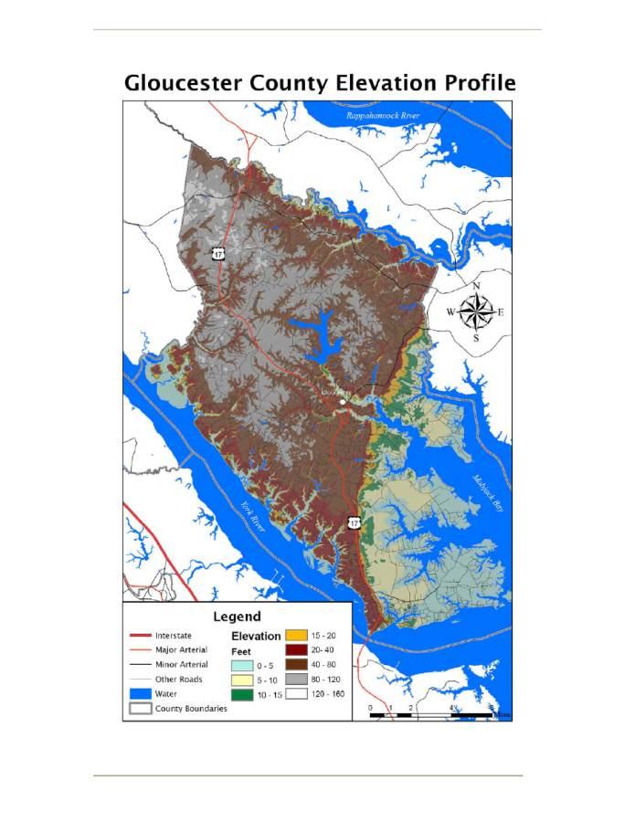
A Coastal Floodplain Management Plan for Gloucester County
14
July 2009
Figure 8
Source: County Base GIS layers were provided by United States Census Bureau and the Elevation GIS
layers were provided by USGS.

A Coastal Floodplain Management Plan for Gloucester County
15
July 2009
Special Flood Hazard Area
FEMA investigated the flood hazards in Gloucester County from 1983 to 1987. This
investigation yielded the county’s FIS and FIRM, both of which are used to develop
flood risk data for the community and establish flood insurance rates throughout the
region. The FIRM depicts flooding during a 100-year storm event (storms that have a 1%
chance of being equaled or exceeded in any given year). The FIRM accounts for both
storm surge driven flooding, as well as flooding caused by heavy rainfall. The map
provides base flood elevations for the entire county derived from detailed hydraulic
analysis of the area described in the FIS. The map also provides flood zone designations
for the entire county describing the type of flooding experienced.
In 2003, Gloucester County’s FIRM was converted to digital form (known as Q3 data).
The Q3 data is not as detailed as the hard copy FIRM; it contains the 100-year and the
500-year floodplain boundaries (including velocity zones), and flood insurance zone
designations but lacks base flood elevations. For purposes of this plan, the county’s Q3
data is a sufficient tool to help assess vulnerability of the community’s roads and built
structures in the special flood hazard area (SFHA), (Figure 9).
FEMA is in the process of updating the FIRM for all localities in the country. Gloucester
County’s updated FIRM is estimated to be available sometime in October or November
of 2009. Once updated the new FIRM layer can be integrated into the County’s
Geographic Information System (GIS), however until then; the 2003 Q3 data will be
used. Below are the flood zone descriptions the Q3 data references:
Zone VE and V - SFHA along the coast, inundated by the 100 year flood with
high velocity hazard caused by wave action. Purchase of flood insurance is
mandatory.
Zone A - SFHA inundated by the 100 year flood. Purchase of flood insurance is
mandatory.
Zone AE – SFHA inundated by the 100 year flood. Purchase of flood insurance is
mandatory.
Zone X and X500 – areas are outside of the 100 year floodplain, not classified as
SFHA.
The updated FIRM will utilize a new SFHA classification to describe the type of
flooding described below:
Zone LiMWA - Limit of Moderate Wave Action Zone, wave action associated
with the VE Zone does not automatically cease at the delineation of the AE Zone.
To address this issue the AE Zone category has been divided by FEMA into a
Limit of Moderate Wave Action (LiMWA) zone. The LiMWA represents the
approximate limit of the 1.5 foot breaking wave. The effects of wave hazards
between the VE Zone and the LiMWA will be similar to, but less severe than
those in the VE Zone.

A Coastal Floodplain Management Plan for Gloucester County
16
July 2009
Figure 9
Source: County Base GIS layers were provided by United States Census Bureau and the Q3 GIS layers were
provided by Mindsites Group, LLC. (This figure is not 100% accurate in that it does not show the
Beaverdam Reservoirs’ flood zones).

A Coastal Floodplain Management Plan for Gloucester County
17
July 2009
Addressed Structures in the Special Flood Hazard Area
In 2005, a study conducted by the Middle Peninsula Planning District Commission
(MPPDC) listed the number of addressed structures in Gloucester that are located in each
special flood hazard area (VE, AE, A). The total number of addressed structures in the
SFHA at that time was 2,233. Of these 1,062 or 48% are located in Census Tract 1005,
Block Group 1, 2, 3 and 4 (Figure 10), which is comprised of what is locally known as
Jenkins Neck, Maryus, Severn, Achilles, Bena, Perrin, and portions of Gloucester Point
(southeastern portion of Gloucester County). Another 453 or 20% are located in Census
Tract 1004, Block Group 1 (locally known as Robins Neck and White Marsh) and Block
Group 2 (locally known as Glass). Another 301 or 13% are located in Census Tract
1002, Block Group 1 (locally known as Dutton) and Block Group 2 (locally know as
Ware Neck), (Middle Peninsula Planning District Commission, 2005). Figure 10 shows
the location of each of these areas with relation to Gloucester County. To view the entire
study with relation to Gloucester, see Appendix B.
Pre-FIRM Structures in the Special Flood Hazard Area
The above referenced study conducted by the MPPDC also analyzed Gloucester County’s
addressed structures with relation to the year they were built. According to the study,
12,065 of the 15,260 structures (79%) in Gloucester County were built prior to 1989,
before flood risks of the area were officially identified, and are classified as pre-FIRM
structures (Middle Peninsula Planning District Commission, 2005). Most pre-FIRM
structures were not built with flood-proof techniques and thus are more vulnerable to
flooding.
Of the county’s 12,065 pre-FIRM structures 1,950 or 6% are located in a Special Flood
Hazard Area (VE, AE, A), and in 2005 had a total estimated value of $214,482,700. Of
these, 973 or 50% are located in Census Tract 1005, Block Groups 1, 2, 3 and 4 (Figure
10) which is made up of Jenkins Neck, Maryus, Severn, Achilles, Bena, Perrin, and
portions of Gloucester Point (southeastern portion of Gloucester County). In 2005, the
total estimated value of these area’s pre-FIRM structures was $98,658,900. Notably
there are 388 or 20% of the total located in Robins Neck/ White Marsh and Glass. In
2005, the combined total estimated value of these area’s pre-FIRM structures was
$45,215,800. Of the total, 253 or 13% are located in Dutton and Ware Neck. In 2005,
the combined total estimated value of these area’s pre-FIRM structures was $34,426,800
(Middle Peninsula Planning District Commission, 2005). Figure 10 shows the location of
each of these areas with relation to Gloucester County. To view the entire study with
relation to Gloucester, see Appendix B.
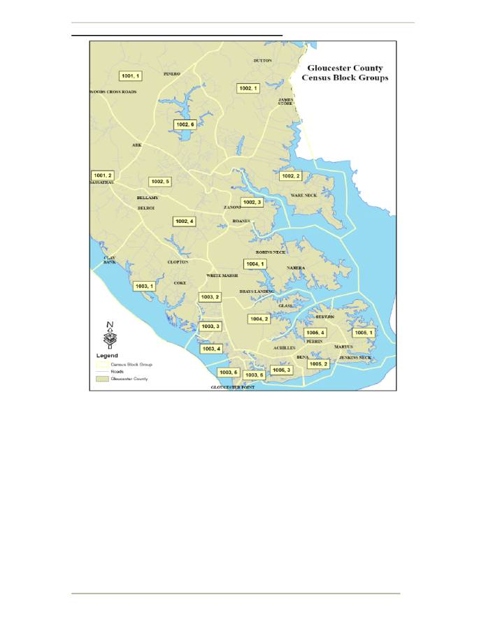
A Coastal Floodplain Management Plan for Gloucester County
18
July 2009
Figure 10: Gloucester County Census Block Groups
Source: Gloucester County Information Technology/ GIS Department.
Storm Surge Map
Another tool to determine the vulnerable areas of a community is the storm surge map.
A storm surge map reflects the worst case hurricane storm surge inundation (at
astronomical high tide) from a direct hit from the hurricane as it makes landfall. These
maps do not show areas that may be flooded by excessive rainfall; they only depict
flooding as a result of storm surge (Hampton Roads Emergency Management Committee,
2006). Also, these maps do not indicate depth of flooding (Gloucester County, 2006).
Gloucester County’s surge map (Figure 11) illustrates possible storm surge inundation
areas in the county. In every storm surge scenario the eastern and southeastern portion of
Gloucester County experience the highest risk of storm surge flooding. As the intensity
of the hurricane grows, areas further inland are at higher risk of flooding from storm
surge. Due to the rapid increase in the county’s elevation levels as one travels inland, the
intrusion of storm surge caused by increasing storm strength does not change
dramatically, i.e. the area impacted by the storm surge from a Category 3 or 4 hurricane
is not much greater than from a Category 2 hurricane (Figure 8).
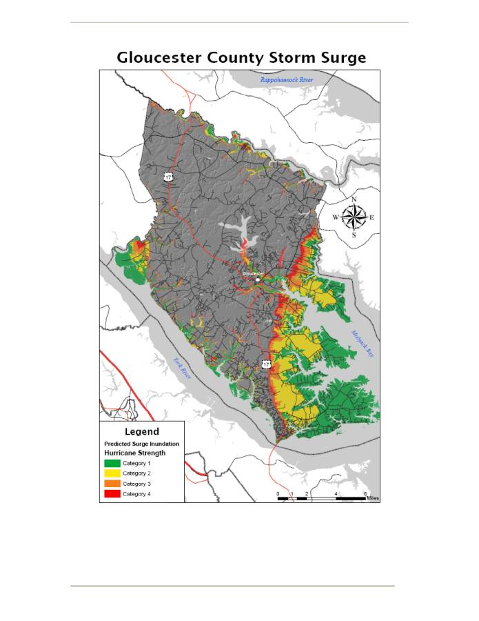
A Coastal Floodplain Management Plan for Gloucester County
19
July 2009
Figure 11
Source: County Base GIS layers were provided by United States Census Bureau and the Storm Surge
GIS layers were provided by Gloucester County Information Technology/ GIS Department. (This
figure is not 100% accurate due to the storm surge being shown extending passed Beaverdam
Reservoir Dam, the elevation of the toe of the dam was increased during the dams original construction
and has eliminates this from occurring).
A Coastal Floodplain Management Plan for Gloucester County
20
July 2009
Potential Structural Vulnerability to Storm Surge Inundation
The 2005 study conducted by the MPPDC also analyzed Gloucester County’s potential
structural vulnerability to storm surge inundation caused by Category 2, 3, and 4
hurricanes.
3
Throughout Gloucester County, nearly 23% of all addressed structures
(3,443 total) lie within the predicted storm surge for a Category 2 hurricane. A storm
surge from a Category 3 hurricane had the potential to affect 26% of the county’s
addressed structures (3,994 total), and in 2005 had the potential for $459 million in
damages. A storm surge from a Category 4 hurricane had the potential to affect 600
additional structures, and in 2005 it was estimated to cause over $527 million in property
loss (Middle Peninsula Planning District Commission, 2005).
The MPPDC’s study determined that the census block groups with the most potential to
be severely affected by storm surges are in Census Tract 1005, Block Group 1, 2, 3 and 4
(Figure 10) which is comprised of Jenkins Neck, Maryus, Severn, Achilles, Bena, Perrin,
and portions of Gloucester Point (southeastern portion of Gloucester County). Every
built structure within these four census block groups lies within the predicted storm surge
from a Category 2 hurricane - a total of 1,798 structures; in 2005 it was estimated at
$196,380,100 in potential property losses.
Other census block groups with high potential to be severely affected by storm surge are
in Census Tract 1004, Block Group 1 locally known as Robins Neck and White Marsh
and Block Group 2 locally known as Glass (Figure 10). In Block Group 1, 80% of the
built structures run the risk of inundation by a storm surge from a Category 2 hurricane -
a total of 377 structures, in 2005 it was estimated at $46,898,800 in potential property
losses. In Block Group 2, 68% run the risk of inundation by the same surge, a total of 265
structures; in 2005 it was estimated at $29,097,000 in potential property losses.
Another census block group with high potential to be severely affected by storm surge is
in Census Tract 1002, Block Group 2 locally known as Ware Neck (Figure 10). A little
over 55% of the block group’s built structures run the risk of inundation by a storm surge
from a Category 2 hurricane – a total of 339 structures, in 2005 it was estimated at
$48,205,800 in potential property losses (Middle Peninsula Planning District
Commission, 2005).
Repetitive Loss Areas
FEMA classifies Repetitive Loss Properties as those that that have made flood damage
claims of $1,000 or more twice within a 10-year period. FEMA classifies Severe
Repetitive Loss Properties as any property that has at least four NFIP claim payments
(including building and contents) over $5,000 each, and the cumulative amount of such
claims payments exceeds $20,000. The properties on the list are subject to change over
time, and will depend on the frequency and severity of the seasonal coastal storms that
affect the area. As of June 30, 2008, there were 65 repetitive loss and 1 severe repetitive
loss properties in Gloucester. Of the 65 repetitive loss properties 59 are residential and
3
(Note: Category 1 and Category 5 hurricane surge data is not analyzed in the structural vulnerability study
due to data limitations.) (For study see Appendix B).
A Coastal Floodplain Management Plan for Gloucester County
21
July 2009
the other 6 are businesses. The county’s only severe repetitive loss property is a
residence. Gloucester is classified as a “Category C” repetitive loss community (> 10
repetitive loss sites) and must tailor its floodplain management plan specifically to the
county’s repetitive loss areas.
Due to Privacy Act requirements, Repetitive Loss & Severe Repetitive Loss properties
will be generalized based on location, and will further be known as a Repetitive Loss
Areas. These areas and the amount of repetitive loss properties in them will aid in the
county’s determination of which portions of the county have the most frequent and severe
flood related damages to residences, and will be high priority target areas for future
mitigation activities. The majority of the county’s repetitive loss properties are located in
the southeastern portion of the county, with a high concentration being located in Jenkins
Neck, Maryus, Severn, Achilles, Bena, Perrin, and portions of Gloucester Point as well as
in Glass. There are also four additional repetitive loss properties located in Ware Neck,
two located in both Roanes and Coke, and one located in Dutton (Table 5 and Figure 10).
Table 5: Repetitive Loss Areas
Repetitive Loss
Areas
Area of the
County
Number of
Properties
Jenkins Neck
Southeastern
16
Glass Southeastern
12
Achilles
Southeastern
11
Severn
Southeastern
7
Maryus
Southeastern
6
Bena
Southeastern
2
Perrin
Southeastern
2
Coke
Southwestern
2
Ware Neck
Central Portion
4
Roanes
Central Portion
2
White Marsh
Central Portion
1
Dutton
Northeastern
1
Source: FEMA, 2008
As of June 30, 2008 Gloucester County’s 66 repetitive loss properties have received a
combined $4,183,622 in flood insurance damage claims within the last ten years (FEMA,
2008). Of these repetitive loss properties 24 have been mitigated against damages caused
by flooding through either elevation or demolition of the primary structure, or acquisition
of the property itself. Regardless, these properties remain on the list due to the required
time frame that must pass since each repetitive loss property last had an insurance claim.
Throughout this plan, once a property has received flood mitigation it will no longer be
considered as a primary target area for future mitigation strategies. Later sections of this
plan will focus applicable mitigation activities specifically to the properties or areas that
have not received mitigation against damages caused by flooding.
A Coastal Floodplain Management Plan for Gloucester County
22
July 2009
Highest Priority Target Areas Based on Vulnerability
Areas in the county that are the most vulnerable to flooding will be considered the target
areas for future flood mitigation activities, and classified as such. Rather than utilize
repetitive loss properties as the sole indicator of an area’s vulnerability, a combination of
four indicators will be utilized: 1) highest concentration of addressed structures in the
SFHA 2) highest concentration of pre-FIRM structures in the SFHA 3) highest
percentage of structural vulnerability to storm surge inundation and 4) highest amounts of
repetitive loss properties. Utilizing a combination of these four indicators will help
justify areas in the county that may not have been affected by a seasonal coastal storm in
recent history but have high potential for catastrophic results in the event of a seasonal
storm. This decision is based on the very nature of seasonal coastal storms, which are
characterized by their unpredictability with regard to frequency, duration, strength and
trajectory. The amount of repetitive loss properties in an area can dramatically change
from coastal storm event to coastal storm event. If the county were to utilize repetitive
loss properties as the sole indicator of vulnerability it would be placing too much
emphasis on past storms rather than preventing future damages from future coastal
storms.
Based on this plans’ analysis of the 2005 study conducted by the Middle Peninsula
Planning District Commission, (which was discussed in the previous four sections) the
area of the county that is most vulnerable to flooding is the southeastern portion of the
county, which includes the most addressed structures in the SFHA, possesses the most
pre-FIRM housing in the SFHA, and has the highest percent of structures predicted to be
inundated in a storm surge, as well as has the highest number of repetitive loss properties
in the county. Because of these findings the Jenkins Neck, Maryus, Severn, Achilles,
Bena, Perrin, and portions of Gloucester Point (southeastern portion of the county) are
considered the highest priority target area for future flood mitigation strategies in the
county.
Other target areas in the county are Robins Neck and White Marsh, Glass, Dutton, and
Ware Neck.
3.2 Vulnerable Populations
In Gloucester County, 3,884 residents (11%) are living in the county’s most severe
coastal flood hazard area, Census Tract 1005 (southeastern portion of the county). In
order to maximize the effectiveness of this plan, it is imperative to identify vulnerable
segments of the population at risk of coastal flooding hazards. By understanding the
population at risk, emergency management planners will be better equipped to review the
effectiveness of the existing flood mitigation practices and address the unmet needs of the
area. To asses the social vulnerability of the high hazard area, age, disability, and income
levels were identified from the 2000 Census and analyzed at the Census Tract level.
Age and Disability
According to the 2000 Census, Census Tract 1005 is largely made up of middle-aged
residents (median: 42 yrs); 23% of the population is under the age of 18, a quarter of
A Coastal Floodplain Management Plan for Gloucester County
23
July 2009
which are children above five years old. The southeastern portion of the county also has
a moderate number of elderly (15% 65 or older). Recent population projections by age
cohort for the county show large increases in the elderly population in coming decades
with 22% of the county being elderly by 2020, and almost 37% by 2030.
The area’s disabled population includes a wide range of age groups. According to the
2000 Census, 32% of all residents in this Census Tract who are above five years of age
are living with a disability, and 30% of the disabled are 65 years of age and older.
Young children, the elderly, and the disabled populations are important to consider due to
their lesser capacity to protect themselves in hazardous situations, and their limited levels
of mobility (Sorensen, 2006).
Income
According to the 2000 census, annual income levels in Census Tract 1005 are very
evenly distributed: 27% <$24,999, 27% $25,000 - $49,000, 19% $50,000 - $74,999, and
27% >$75,000.
Typically, low income households face higher levels of risk from flooding because they
can least afford the costs associated with relocation, property protection (e.g. elevating
structure), repair and cleanup (e.g. tree removal, floor replacement, and appliance
replacement) (Sorenson, 2006).
3.3 Critical Facilities
Critical facilities are those that are crucial to the every-day functioning of a community,
or that provide essential services during emergencies and are charged with providing
special care to vulnerable populations. The vulnerability of critical facilities can be
assessed by their location in a flood zone as depicted in the digitized FIRM, as well their
location in an area potentially inundated by storm surge from a hurricane (Figure 12)
(NOAA CSC Risk and Vulnerability Assessment Tool).
Fire and Rescue
Gloucester has six fire and rescue stations throughout the county (Appendix I). The
Gloucester Volunteer Fire and Rescue Department maintains three stations that serve the
northern portion of the county (Stations 1, 4 and 6). Abingdon Volunteer Fire Rescue
maintains three stations that serve the southern portion of the county (Stations 2, 3 and 5).
None of Gloucester’s six fire and rescue stations are located in a flood zone; however,
Station 2 (located in the southeastern portion of the county) could be inundated during a
storm surge from a Category 2 hurricane (Figure 12). Previous coastal flooding caused
by documented hurricane induced storm surges has not hindered the stations ability to
respond. No other fire and rescue station in Gloucester is located in an area potentially
inundated by storm surge.
Shelters
Gloucester utilizes several public schools as shelters during emergency events. Only one
of the nine public schools in Gloucester County - Achilles Elementary School (located in

A Coastal Floodplain Management Plan for Gloucester County
24
July 2009
the southeastern portion of the county) - is within a flood zone, classified AE (area
inundated by the 100 year flood). This school is also located within the predicted extent
of storm surge flooding caused by a Category 1 hurricane (Figure 12); however,
according to the Gloucester County Emergency Operation Plan (EOP), Achilles
Elementary School is not used as a shelter during seasonal storms because of its
vulnerability to flooding (Gloucester County, 2002).
Public Water (Beaverdam Reservoir)
Gloucester County provides various public services and facilities for its residents,
including those related to water supply and sewage disposal. The Beaverdam Reservoir
and its associated water treatment plant provide portions of the county with public water.
The facility is located just north of the courthouse area and is contained by an earthen
dam. The reservoir covers approximately 655 acres, and is surrounded by a 300 to 600
foot buffer of county owned forestland that makes up the Beaverdam Reservoir Park
(Middle Peninsula Planning District Commission, 2005). The impounding structure for
Beaverdam Reservoir, Beaverdam Reservoir Dam, is classified as a “High” hazard dam.
Dams are classified with a hazard potential depending upon downstream losses
anticipated in the event of a failure as opposed to their structural integrity.
The dam was constructed in accordance with plans approved by the Virginia Department
of Conservation and Recreation (VDCR). In addition, VDCR has issued the required
operational certificates directing/confirming the safe operation of this facility. There
have never been any flooding problems related to the dam structure serving the reservoir.
Portions of the reservoir are located in flood zones AE and A, and according to county
storm surge maps the downstream side of the dam itself has the potential to be inundated
by a storm surge from a Category 3 hurricane. However, this does not pose any
significant risk to the dam given it is designed to pass the probable maximum flood
(PMF) which vastly exceeds a 100 year flooding event. The dam’s emergency spillway
was tested during 1999’s Hurricane Floyd and behaved as designed with water flowing
downstream using the primary and emergency spillways.
Private Water
Where public water is not available or citizens chose not to use available public water,
Gloucester County citizens use thousands of private deep and shallow wells (Gloucester
County, 2002). Depending on the location of an individual household, the well system
may be in a flood zone or in an area potentially inundated during a storm surge. These
private water supplies are susceptible to contamination during flooding (see “Safety and
Health Hazards” below) and usually are a key factor for attention in post disaster
remediation.
Public Sewer and Private Sewage Disposal
Portions of Gloucester County are served by public sewer. The county’s sewage is
collected and pumped by pump stations that are owned by the county. The sewage is
then transported through underground pipes that are owned by the Hampton Roads
Sanitation District, these lead from the courthouse area along Route 17, under the York
River and to Hampton Roads. The system is a closed underground system (force main)
that does not sustain damages during severe flooding events. However, there were two
A Coastal Floodplain Management Plan for Gloucester County
25
July 2009
pump stations in the Gloucester Courthouse area (Pump #11 and Pump #13) that
sustained damage during Hurricane Floyd in 1999. According to the Department of
Information Technology and the Public Utilities Department there are approximately 282
lots within 200’ of the Sewer lines along Guinea Road (in the county new residences
within 200’ of the sewer and water lines must connect, after the 200’ connection is
optional if the service is available). Of these 282 lots, 167 are currently connected to
water, sewer or both. Of the 282 lots, 33 lots have a meter and choose to pay a flat fee
rather than connect. The other 82 properties are vacant and must connect if they are to be
developed. Of these the majority are in a flood zone.
Others portions of the county utilize septic tanks for private sewage treatment.
Depending on the location of an individual household, the septic tank may be in a flood
zone or in an area potentially inundated during a storm surge.
According to the Virginia Department of Health there are many residences that utilize
either public sewer or private septic systems that also utilize public water. This may pose
a special problem during storm events. In cases where the sewage system becomes
disabled (either by disability of a mechanical appurtenance or through a power outage)
and a water supply remains uncompromised, the result is usually a back-up of sewage
into the structure or an exposure of sewage on the ground surface (as experienced after
Hurricane Isabel) (see “Safety and Health Hazards” below).
Roads
Gloucester County residents primarily utilize Rt. 17 - George Washington Memorial
Highway - as the main artery of the County. The four lane highway runs North-South
through the center of the County. Unfortunately VDOT does not keep records of which
roads flood and to what extent. In an effort to identify the roads that are most vulnerable
to damage from coastal flooding, road closure data was obtained from VDOT and utilized
in the plan.
Rt. 17 has not been closed
4
due to flooding in past storm events.
Regardless, two segments of the road are located in a flood zone, classified AE (area
inundated by the 100 year flood), and are potentially affected by storm surge. The first is
near the court house area of the County and would be potentially inundated by a storm
surge from a Category 1 hurricane. The second is located at the southern end of the
County and has potential to be inundated by a storm surge from a Category 3 or 4
hurricane (Figure 12). Box culverts were utilized during the design and construction of
the road to divert water under the roadway, these culverts are capable of flowing large
amounts of water before flooding the road above.
Notably, the majority of roads in the southeastern portion of the county are built in a
flood zone, (classified as VE and AE), and would be inundated during a Category 1
hurricane. And all the roads in this area of the county would be potentially inundated in a
Category 2 hurricane (Figure 12). Over a seven year time frame (1999 – 2006) which
included 1999’s Hurricane Floyd, 2003’s Hurricane Isabel, and 2006’s Hurricane
Ernesto, there has only been one road in the southeastern portion of the county (on one
occasion) that has been closed
4
due to flooding - Rte. 649 (Maryus Road) from
4
The definition of a road closure by VDOT is when a road is closed due to damages to the road which
make it impassable, such as a washout. Closures caused by downed trees were not considered in this list,
nor was a temporary “closure” caused by standing water considered in the list.
A Coastal Floodplain Management Plan for Gloucester County
26
July 2009
Hurricane Ernesto in 2006. While there have been no other closures
4
in this area of the
county during the 7 year time frame, per VDOT recommendation Route 646 (Jenkins
Neck Road) will be considered as a high risk road because it has flooding during every
coastal storm event in recent years. In this plan the road closure data for the County will
primarily focus on roads that have flooded on two or more occasions during the seven
year period mentioned above (Table 6). The causes of the road flooding will be discussed
in further detail in Chapter 5 in the Structural Improvement Activities section.
Table 6: Road Closures due to Flooding from 1999 - 2006
Rte.
Road Segment
605
Indian Road at Beaverdam Reservoir.
606
Farys Mill Road at Beaverdam Park second entrance.
610
Salem Church Road at the fourth bend.
614
Featherbed Lane at second bend.
614
Segment: Hickory Fork Road at Haynes Mill Pond. (This
road segment was fixed in 2006 and has not been closed
since).
625
Ditchley Drive nearest the North River.
662
Allmondsville Road at the bend.
1208 Greate Road at the boat landing.
Source: VDOT, 2007
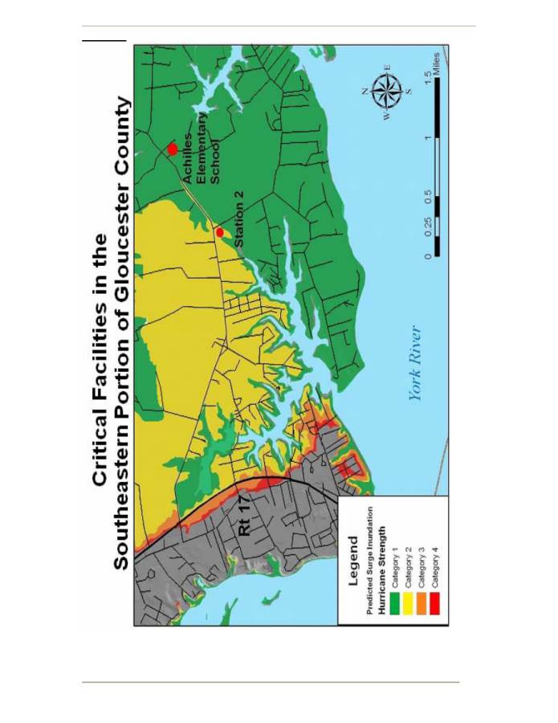
A Coastal Floodplain Management Plan for Gloucester County
27
July 2009
Figure 12
Source: County Base GIS layers were provided by United States Census Bureau, and the Storm
Surge GIS layers were provided by Gloucester County Information Technology/ GIS Department.
A Coastal Floodplain Management Plan for Gloucester County
28
July 2009
3.4 Safety and Health Hazards
Flooding has the potential to cause a significant amount of safety and health hazards in
the county. Nationally, the most deaths from flooding occur while attempting to evacuate
the flood-prone area. Victims become trapped in their vehicles and drown while driving
through floodwaters that appear shallow but turn out to be deep (Des Plaines Engineering
Department 2002, 23). In Gloucester there have been very few deaths caused by
flooding; one of the more recent occurred on September 18, 2003 (Hurricane Isabel)
when an individual died of a heart attack after their vehicle became partially submerged
and they attempted to push the vehicle to dry land, unsuccessful the driver returned to the
vehicle and suffered a heart attack as the vehicle was being swept away in high waters.
Other recent flood related deaths in the County have come about from trees falling on
residential structures during or after a storm event (Middle Peninsula Planning District
Commission, 2005).
While death is ultimately the worst hazard possible, there are other significant health and
safety hazards that can result from flooding events, such as an abundance of solid waste
and debris, the spread of disease by mosquitoes, fuel spills and chemical waste, exposure
to raw sewage caused by septic tank failure, possible damage or destruction of private
water supply, and exposure to mold spores. The possibility of flooding causing serious
safety hazards are amplified when flooded areas become inaccessible to emergency
responders (fire, rescue squad, and police personnel) by high water and or flood related
road damage (Des Plaines Engineering Department 2002, 23). Gloucester County’s road
network has experienced damage caused by coastal flooding on numerous occasions
(VDOT, 2007). These were briefly discussed in Section 3.3 Critical Facilities and will be
discussed in further detail in Chapter 5 in the Structural Improvement Activities section.
Solid Waste and Debris
Hurricanes and associated storms typically generate large amounts of solid waste through
wind damage and/or flooding. Solid wastes generated may include debris, demolition
waste, spoiled food, household goods and products, and other municipal solid wastes.
After a hurricane, solid waste management facilities typically experience significant
increases in waste intake rates due to the cleanup efforts which may strain their normal
capabilities. Nonetheless, they are still required to meet all regulatory and permit
requirements, or obtain temporary modifications of their permits as approved by the
Department of Environmental Quality (DEQ, 2009).
Originally adopted on June 29, 1998 and revised August 9, 2001 the Gloucester County
Disaster Solid Waste Plan appropriately plans for an increased amount of solid waste
generated by coastal storm events. In the plan it is estimated that a Category 4 hurricane
could generate 126,000 cubic yards of waste materials in just seven square miles of the
County’s most densely populated areas. Because of this the Disaster Solid Waste Plan is
an important part of the County’s overall emergency preparedness planning. The plan
sets forth relevant County policies and provides procedures to be followed when the plan
is implemented.
For example; in the event of a major disaster, such as a federally declared disaster, but
without waiting for such a declaration, the County may, in accordance with the plan,
arrange for the activation of the temporary debris storage and reduction site at the VDOT
A Coastal Floodplain Management Plan for Gloucester County
29
July 2009
Park and Ride on Route 216. The County will make appropriate payments for the
operation of this site. Individual residents, non-resident land owners, and businesses who
transport their own material to the disposal site are acting as County agents in self-
hauling debris, they shall sign a statement to the affect that they are giving the
approximate load size along with their name, address, and telephone phone number when
dropping the material. Any persons who are collecting brush or debris and transporting it
for others for a fee are classes as “commercial haulers”. All commercial haulers, whether
working for a County citizen, County business, or the County itself shall deposit their
material at the landfill only. The above procedure is just one of the many described in the
plan, for all procedures see the Gloucester County Disaster Solid Waste Plan, 2001.
While the county has planned for the increased amounts of solid waste due to major
storm events, residents can help reduce the amount of waste that goes into the landfill by
recycling specific types of solid waste and debris. Debris (downed timber, logs, stumps
and brush) can be sorted by size and processed for various reuse projects such as mulch
or firewood. The remaining waste should be taken to the landfill or temporary debris
storage facility for disposal.
Other Types of Debris
While the above mentioned reuse efforts can tremendously cut down on the amount of
waste that goes into the landfill, there are other types of debris (treated wood, propane
cylinders, demolition waste, asbestos containing waste, lead paint abatement waste,
construction waste, household hazardous waste, and petroleum contaminated waste) that
must be properly disposed of or reused due to the potential hazards to human health if
ingested or inhaled (DEQ, 2009).
Spread of Disease by Mosquitoes
Large amounts of standing water brought about by excess rain and flooding from coastal
storms creates unusually large amounts of additional habitat for mosquitoes to breed.
Mosquitoes are known carriers for various types of bacteria and viruses to include among
other things; West Nile Virus, Eastern Equine Encephalitis, Dengue Fever and Yellow
Fever.
The mosquito problem is divided up into two distinct waves of activity that occur after a
flooding event. The initial influx or first wave of mosquitoes belong to a group known as
flood water mosquitoes which include the salt marsh and pastureland mosquitoes. These
mosquito species deposit their eggs on soil and in depressions that are subject to periodic
flooding. When flooded, the eggs hatch simultaneously resulting in large swarms of
mosquitoes five to seven days after the flooding event during the warmest times of
the year. These mosquitoes are primarily annoyance species that play minor roles in
disease transmission.
After the initial wave of flood water mosquitoes disperses, a new group of mosquitoes
move into the new pools of standing water left after the flood waters begins to recede.
This new group of mosquitoes prefer habitats with calm, temporary or permanent pools
of standing water to deposit their eggs. Many of the most important disease vectoring
mosquitoes belong to this group of standing water mosquitoes and compose the second
wave of mosquito invaders.

A Coastal Floodplain Management Plan for Gloucester County
30
July 2009
Neither the County nor the state has any available data on the health problems caused by
mosquito invasions after coastal flooding events in Gloucester. This is most likely
because such incidents are not always reported or confirmed to be directly related to the
coastal flooding event. On April 16, 2007 Gloucester County adopted an Integrated
Mosquito Management Program (IMMP) that is implemented through the Gloucester
County Mosquito Control Commission (GMCC). This program is intended to
specifically address mosquito control measures in the county. The county currently has
five (5) Mosquito Control Districts which are all generally located in the southern half of
the county; these districts were established in accordance with Section 32.1-187 of the
Code of Virginia. The boundaries of these districts are discussed in the County
Ordinance under Chapter 9.5 “Health and Sanitation”, Article II “Mosquito Control
District.” For more information on the plan, see the Integrated Mosquito Management
Program, 2007.
Fuel Spills and Chemical Waste
A long lasting hazard comes from flood water’s ability to mix and spread dangerous
substances such as fuel or other chemical waste throughout a community. These
materials also can seep into the ground water, causing serious health problems for people
served by wells (Des Plaines Engineering Department, 2002).
A significant cause of fuel spills come from unanchored fuel tanks taken away by flood
waters. When the water levels subside the scattered tanks can leak fuel onto the ground
where it can be absorbed into the soil and gradually work its way into the groundwater
(FEMA, 2006). Gloucester County’s building code mandates that all newly installed fuel
tanks in a flood zone be securely bolted or strapped down to a concrete foundation. This
provision acts as a safety measure to keep the tanks from floating away during flooding.
Unfortunately, the mandate does not require pre-existing fuel tanks to be bolted or
strapped down.
Chemical waste coming in contact with floodwaters is primarily caused by the amount of
chemical waste stored in the average home (Des Plaines Engineering Department, 2002).
In order to address this problem Gloucester County runs bi-annual household chemical
collections in the southeastern portion of the county. The collection program can help to
minimize the scattering of chemical waste during coastal flooding; the exact dates and
times are advertised in the community newspaper, The Beehive.
Exposure to Raw Sewage Caused by Sewage Disposal System Failure
On-site sewage systems are susceptible to flood events and may result in the exposure of
untreated sewage directly to humans or indirectly to humans via contact with creatures
(e.g. dogs, cats, rats, flies, cockroaches, fleas or a host of others) that may have contact
with the contaminated floodwater. Human disease contracted through direct or indirect
exposure to untreated sewage includes Salmonella, Shigellosis, Cholera, Viral Hepatitis
A, Gastroenteritis and Amebiasis. Untreated sewage that finds its way to local tidal
waterways may contaminate shellfish harvesting areas and impact a major Gloucester
industry.
Conventional sewage disposal systems are below ground and can naturally recover from
flooding as flood waters subside and the soil dries. According to the VDH the primary

A Coastal Floodplain Management Plan for Gloucester County
31
July 2009
cause of damage to conventional systems is the uprooting of trees. As flood waters and
rainwater saturate soils, trees become extremely susceptible to being uprooted/knocked
over by strong winds. Overtime as a tree grows its roots may become entangled in
nearby drain fields and if the tree is uprooted by strong winds, the drain field can be
uprooted as well. According to the VDH the uprooting of trees during past storm events
has been the number one cause of conventional septic tank damage in Gloucester County.
While uprooted drain fields can be avoided through the use of above ground alternative
sewage disposal systems, during a storm event these systems experience their own
problems and are extremely vulnerable to flooding events. Most alternative systems
utilize mounds of sand to filter septic waste; these mounds as well as the systems which
process the waste tend to be washed away during flooding events, releasing large
amounts of untreated sewage. If the system is not washed away, these systems tend to be
damaged by flood waters, debris or electrical outages. The mechanical parts that these
systems rely on tend to break during or after a storm event. When damaged these
systems fail to work properly and can back up and release large amounts of untreated
sewage. Due to the increased use of this technology and the anticipated expansion of this
use in flood prone areas, the public health, safety and economic impacts of development
in these areas should be examined. This is especially critical in areas impacted by storm
surge.
Damage or Destruction of Private Water Supply
Private water supplies, most often associated with drinking water wells, are significantly
affected by flooding and are usually a first response issue after a disaster. The potential
for contamination is present when well inundation with flood water that may be tainted
by raw sewage or by chemicals released during a flood event occurs. Residents should
not drink well water until it is tested.
Exposure to Mold Spores
Extensive water damage from flooding increases in the likelihood of mold contamination
in buildings. Approximately 100,000 species of fungi exist but fewer than 500 fungal
species cause infections in humans, generally through respiratory exposure. Infections
from mold might be localized to a specific organ or disseminated throughout the body.
Prolonged exposure to high levels of mold (and some bacterial species) can produce an
immune-mediated disease known as hypersensitivity pneumonitis (CDC, 2006). After a
flooding event buildings should be cleaned, dried out, and then inspected for signs of
mold growth. If signs of mold are present, the building may need professional mold
treatment or extensive structural repairs.
A Coastal Floodplain Management Plan for Gloucester County
32
July 2009
4. Goals
The following goals and objectives relate to appropriate actions that Gloucester County
can implement to lessen the amount of damage caused by coastal flooding.
Goal 1: Protect public and private property from damage caused by coastal flooding
hazard.
Objective 1.1: Prevent roadways in the county from being damaged during coastal
flooding.
Objective 1.2: Protect new and existing development in the county’s flood-prone areas
from damages caused by coastal flooding hazard.
Objective 1.3: Protect critical facilities from being damaged during coastal flooding.
Goal 2: Maximize citizen actions to protect private properties.
Objective 2.1: Ensure that residents are given adequate warning of potential coastal
floods.
Objective 2.2: Ensure that residents can easily obtain all general and property specific
information relating to flooding and flooding risk.
Existing hazard mitigation strategies and recommendations for improvement are
identified in Chapter 5.
A Coastal Floodplain Management Plan for Gloucester County
33
July 2009
5. Hazard Mitigation Activities
Over the years, the county has taken many steps to protect its citizens and property from
flooding hazard. The county’s current hazard mitigation activities can be grouped into
the following categories:
1. Structural Improvement Activities
2. Preventative Activities
3. Property Protection Activities
4. Public Information Activities
5. Emergency Service Measures
6. Natural Resource Protection
In order to clearly distinguish the efforts the county has already implemented from this
plan’s recommendations for improvement; each will be designated as such. If there are
no additional recommendations for improvement, the recommendation for the section
will merely endorse the continuation of the county’s existing effort.
5.1 Structural Improvement Activities
Structural improvement activities are a special type of mitigation project that aims to
keep flood waters from damaging critical facilities. Structural improvement projects
have many advantages as well as many shortcomings. When appropriate these
improvements may provide long term protection against specific flood related damages.
The shortcomings of these improvements depend on the nature of the improvement, but
generally they are very expensive and require regular maintenance (Des Plaines
Engineering Department 2002, 33).
The following structural improvement activities have been, or should be, implemented in
Gloucester County:
a. The Beaverdam Reservoir Dam
b. Road Improvements
5.1a The Beaverdam Reservoir Dam
As discussed in earlier sections, the Beaverdam Reservoir is located in the central portion
of Gloucester and it is contained by an earthen dam. The reservoir covers approximately
655 acres, and is surrounded by a 300 foot to 600 foot buffer of County owned forestland
that makes up the Beaverdam Reservoir Park (Middle Peninsula Planning District
Commission, 2005). The dam was constructed in accordance with plans approved by the
Virginia Department of Conservation and Recreation (VDCR). In addition, VDCR has
issues required operational certificates directing/confirming the safe operation of this
facility.
What Has Been Implemented: There have been no flooding problems related to the
dam structure serving the reservoir. Portions of the reservoir are located in flood zones
AE and A, and according to county storm surge maps the downstream side of the dam
itself has the potential to be inundated by a storm surge from a Category 3 hurricane.
However, this does not pose any significant risk to the dam given it is designed to pass
the probable maximum flood (PMF) which vastly exceeds a 100 year flooding event.
A Coastal Floodplain Management Plan for Gloucester County
34
July 2009
The dam’s emergency spillway was tested during Hurricane Floyd in 1999 when the
impoundment structure behaved as designed with water flowing downstream using the
primary and emergency spillways.
There is no established database in Virginia of historic dam failures. However, most dam
failures occur due to a lack of maintenance of the dam facilities in combination with
excessive precipitation events, such as seasonal coastal storms or thunderstorms.
The Gloucester County Public Utilities Department conducts weekly inspections of the
dam and provides regular maintenance to the facility. The county also participates in the
National Dam Safety Program maintained by FEMA and the U.S. Army Corps of
Engineers, which provides the county with dam safety research and training, and grant
assistance opportunities to maintain dam safety. No improvements to Gloucester
County’s preventative measures against dam failure are needed.
Recommendation 5.1a: The County should continue to regularly inspect the dam and
perform regular maintenance, as well as continue to participate in the National Dam
Safety Program.
5.1b Road Improvements
Gloucester County roadways are used as evacuation routes as well as the primary means
for emergency responders to reach properties after coastal flooding events. Roadways
damaged by coastal flooding can hinder emergency responders’ ability to reach these
areas. Roads in a flood zone can be damaged by floodwaters if they are built below
prescribed levels of flood protection or without proper drainage (USDA, 1998).
What Has Been Implemented: The Virginia Department of Transportation (VDOT)
utilizes specialized design criteria for protection of roadways against flooding. The
Department's usual criteria are to have the lowest edge of the road shoulder elevated 18"
above the prescribed level of flood protection (Figure 13). The prescribed level of
protection are as follows: the ten year flood level for secondary roads, the 25 year flood
level for primaries and arterials, and the 100 year flood level for emergency evacuation
routes (VDOT, 2007).
Figure 13: Depiction of VDOT Prescribed Roadway Section
Source: VDOT, 2007
Under the Byrd act of 1932, VDOT assumed responsibility for all the public roads in
Gloucester County. The majority of roads in the county that serve coastal areas predate
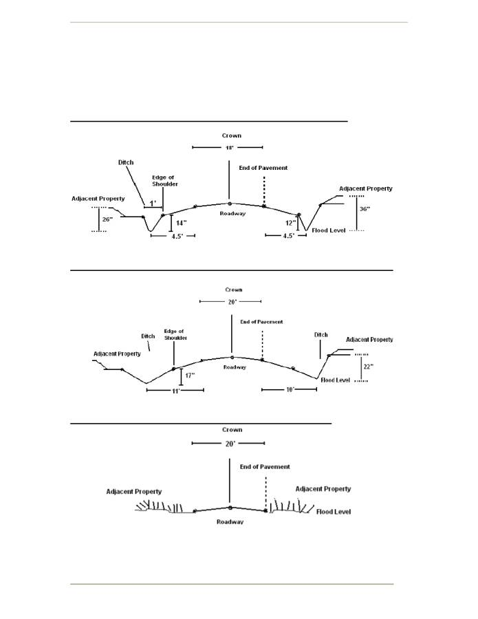
A Coastal Floodplain Management Plan for Gloucester County
35
July 2009
Gloucester County’s FIS and FIRM which provide base flood elevations. Thus the exact
identification of the appropriate flood level was not used to protect these roads. The
figures below depict various road segments in the southeastern portion of the county, all
of which are built differently than the prescribed roadway above (Figure 13). The figures
below depict the variable lengths or lack of shoulders along the roadways, the variable
depth or lack of ditching along roadways, and the height of adjacent property to that of
the roadway’s pavement.
Figure 13a: Depiction of Roadway Section at 2339 Low Ground Road
Source: Field Survey, 2009
Figure 13b: Depiction of Roadway Section at Haywood Seafood on Maryus Road
Source: Field Survey, 2009
Figure 13c: Depiction of Roadway Section at 10021 Maryus Road
Source: Field Survey, 2009
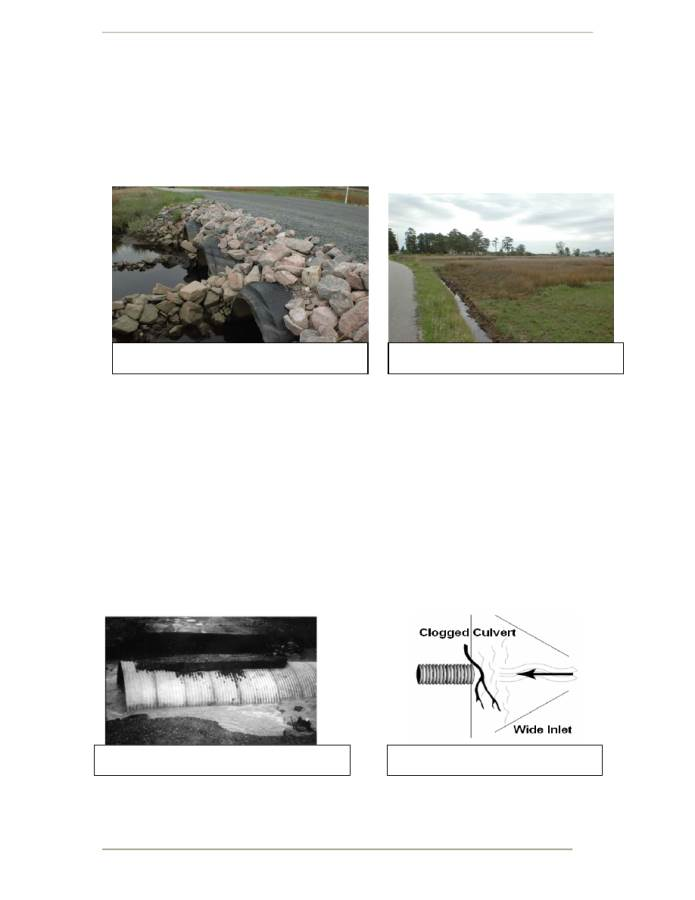
A Coastal Floodplain Management Plan for Gloucester County
36
July 2009
VDOT also uses roadway drainage crossings to protect roads from flooding; these
crossings divert tidal streams under roadways through culverts (Figure 14). This
protection measure prevents tidal streams from eroding land the road is built on, avoiding
damage to the road (USDA, 1998). Roadside ditches are used to drain rainwater from
roadways (Figure 15). During the three community meetings many citizens commented
on the amount of debris and sediment clogging the area’s ditches, causing the flooding
problem in the southeastern portion of the county to be exacerbated during coastal
storms.
Inadequate drainage problems arise when water volume surpasses the culvert’s capacity,
forcing water to either side of the culvert or over the road, causing erosion of the roadway
segment (Figure 17), (USDA, 1998). Clogged culverts can hinder the performance of the
roadway drainage crossings, causing damage to the road. Debris carried by floodwaters
can become lodged inside or around the entry of the culvert, preventing water from
flowing under the road (Figure 18). Water is then forced to either side of the culvert, or
over the road, causing erosion and eventual damaging the road (USDA, 1998). When the
flow of floodwaters is allowed to spread out laterally prior to entering a culvert, debris
can accumulate and increase the chance of clogging the culvert (Figure 18), (USDA,
1998). Figure 17 is an example of a culvert inlet that is too wide, increasing the chance
of clogging. In order to avoid clogging; the culvert’s inlet basin should be designed to
maintain the natural channel configuration of the stream, promoting debris passage
through the culvert (Figure 19), (USDA, 1998).
Figure 14: Roadway Drainage Crossing in the
Southeastern Portion of the County.
Figure 15: Roadside Ditch in the Southeastern
Portion of the County.
Figure 16: Example of Damaged Roadway Drainage Crossing
Source: USDA, 1998
Figure 17: Example of a Clogged Culvert Caused by
a Wide Inlet Source: USDA, 1998
A Coastal Floodplain Management Plan for Gloucester County
37
July 2009
Figure 18: Culvert Inlet that Maintains Natural Channel Configuration
Source: USDA, 1998
Recommendations for Improvement: It is recommended that in order to maintain
culverts and ditches in the southeastern portion of the count that a semiannual ditch
maintenance program be created. The maintenance program will designate who is
responsible for clearing ditches and culverts as well as establishes who will pay for such
services, and establish a schedule for semiannual maintenance. The possibility of
utilizing incarcerated individuals from the County Jail to clear ditches should be looked
into. VDOT in combination with County officials should be involved in the preparation
of this maintenance program.
Unfortunately, VDOT does not keep records of which roads flood and when. In an effort
to identify the roads that are most vulnerable to damage from coastal flooding, road
closure data was obtained from VDOT.
5
A seven year time frame (1999 – 2006) was
considered because of the likelihood that the roads have not been structurally improved
since 1999 and because of the relevance of the most recent storm events: 1999’s
Hurricane Floyd, 2003’s Hurricane Isabel, and 2006’s Hurricane Ernesto. During this
time frame there has only been one road in the southeastern portion of the county (on one
occasion) that has been closed
6
due to flooding - Rte. 649 (Maryus Road) from Hurricane
Ernesto in 2006. There have been no other closures
6
in the southeastern portion of the
county during the 7 year time frame. Per VDOT recommendation Route 646 (Jenkins
Neck Road) will be considered as a high risk road because it has flooding during every
coastal storm event in recent years. For purposes of relevance road closure data for the
rest of the county focuses primarily on roads that have been closed
6
on two or more
occasions due to flooding during the seven year period (Table 7).
Table 7: Road Closures due to Flooding from 1999 - 2006
Rte.
Road Segment
605
Indian Road at Beaverdam Reservoir.
606
Farys Mill Road at Beaverdam Park second entrance.
610
Salem Church Road at the fourth bend.
614
Featherbed Lane at second bend.
614
Segment: Hickory Fork Road at Haynes Mill Pond. (This
road segment was fixed in 2006 and has not been closed
since).
625
Ditchley Drive nearest the North River.
662
Allmondsville Road at the bend.
1208
Greate Road at the boat landing.
Source: VDOT, 2007
5
The road closure data does not describe the cause of flooding; the information merely informs us which
road segments experienced closures due to flooding and when they were closed.
6
A road closure by VDOT is caused by damages to the road which make it impassable, such as washout.
Closures caused by downed trees were not considered in this list, nor was a temporary “closure” caused by
standing water considered in the list.

A Coastal Floodplain Management Plan for Gloucester County
38
July 2009
What Has Been Implemented: According to VDOT, a triple line of pipe on State Route
649/Maryus Road was replaced in the summer of 2006 and the segment was elevated
approximately one (1) foot. Also, in September of 2006 VDOT completed a construction
project which relocated Route 614 from the Haynes Mill Pond dam to a bridge several
hundred yards downstream. The road over the dam has not been officially abandoned,
but it is blocked off and no longer in use. Other than the above mention there have been
no other major elevation improvements to the roadways in the county that have
experienced damage from flooding within the last seven years. When a road segment is
damaged by flooding; it initially receives an emergency repair, and later when funds
become available is rebuilt to current VDOT standards.
Recommendations for Improvement - Due to the costs associated with road
construction and the limited funds available each year, it is not currently feasible for the
county to implement structural improvements on each of these roads. Thus a priority
listing was created to indicate which road segments should be improved before others.
Priority was given to road segments that support the largest number of pre-FIRM
structures in a flood zone. Most pre-FIRM structures were not built with flood-proof
techniques and are vulnerable to flooding. The number of unmitigated pre-FIRM
structures in each flood zone was obtained through county GIS maps and county property
records. All of the roads in the study are secondary roads. Because Maryus Road and
Haynes Mill Pond have received alterations in recent years, these roads were not
considered in the priority list, the county should continue to monitor these roadways
before and after a flooding event, if they continue to receive damage due to flooding they
will be placed back on the road improvement priority list.
Road Improvement Priority List
1
st
Priority: Rte. 646 (Jenkins Neck Road)
The road supports over 100 structures, of which 90 are estimated to be pre-FIRM
in a flood zone.
2
nd
Priority: Rte. 625 - Segment: Ditchley Drive nearest the North River
The road segment supports 65 structures, 27 are pre-FIRM in a flood zone.
3
rd
Priority: Rte. 662 - Segment: Allmondsville Road at the bend
The road segment supports ten structures; six are classified as pre-FIRM
in a flood zone.
4
th
Priority: Rte. 614 - Segment: Featherbed Lane at the second bend
The road segment supports 15 structures; three are classified as pre-FIRM
in a flood zone.
5
th
Priority: Rte. 610 - Segment: Salem Church Road at 4
th
bend
The road segment supports three structures; one is classified as a pre-FIRM in a
flood zone.
6
th
Priority: Rte. 605 - Segment: Indian Road at Beaverdam Reservoir
The road segment supports eight structures; none are classified as pre-FIRM
or in a flood zone.
7
th
Priority: Rte. 606 - Segment: Farys Mill Road at Beaverdam Park second entrance

A Coastal Floodplain Management Plan for Gloucester County
39
July 2009
The road segment supports no structures.
8
th
Priority: Rte. 1208 - Segment: Greate Road at the boat landing
The road segment supports no structures.
The roadway improvement priority list for Gloucester County is visually depicted in
Figure 19.
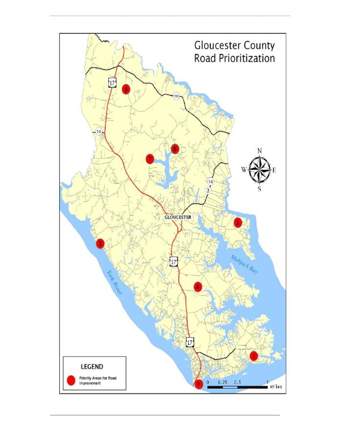
A Coastal Floodplain Management Plan for Gloucester County
40
July 2009
Figure 19
Source: County Base GIS layers were provided by United States Census Bureau.

A Coastal Floodplain Management Plan for Gloucester County
41
July 2009
To further address the road conditions of the southeastern portion of the county, VDOT
staff was asked to determine the extent to which the area’s roads must be raised to meet
the agency’s prescribed level of protection (see Appendix C). However, because there
has been only one road closure
6
in the southeastern portion of the county (Maryus Road)
during the last three hurricane events it can be assumed that the majority of this area’s
roads were built to the prescribed level of protection or utilize adequate road drainage
crossings. Maryus Road experienced a closure
6
from Hurricane Ernesto in 2006 because
a roadway drainage crossing washed out during the storm. The exact cause of the
washout is unknown; it could have been caused by lack of elevation and or by inadequate
drainage crossing.
According to VDOT’s prescribed level of protection; Maryus Road should be elevated
above the ten year flood level (see Appendix C). To structurally improve Maryus Road
to withstand floodwaters, sections of the road that have been closed due to flooding
should be elevated to VDOT’s prescribed protection level of the 10-year flood level and
the number and size of culverts under the roadway should be increased and properly
designed to allow coastal flood waters to flow freely. As mentioned earlier VDOT has
since replaced a triple line of pipe on Maryus Road and elevated the segment
approximately one (1) foot, continued monitoring of the roadway is needed and if
problems with flooding persist, structural improvement activities should be considered.
Roadway Signage
It was expressed through citizen comment that there are many other roads in the county
which have frequently flooded in addition to those which have been officially closed by
VDOT. Low lying roads in the county become extremely dangerous or impassable as
floodwaters rise. In some instances residents who are attempting to evacuate the area are
forced to drive through standing water on flooded roadways. This is very dangerous and
vehicles can easily loose contact with the road surface and hydroplane off the road or
become buoyant and possibly be carried away by high-waters. Various localities
throughout the nation employ warning signs that measure height of water to warn drives
of water depths atop of roadway surface.
What Has Been Implemented: Currently VDOT does not keep records of which roads
in the county frequently flood. Nor does VDOT employ flood warning signs on
frequently flooded roads before a storm event, but rather only after a flooding occurrence
do they place temporary portable “Caution High Water” signs on roadways where
standing water is reported after a flooding event.
Recommendations for Improvement: The County should keep detailed records of
which roads in the county flood, how often and to what extent. Permanent signage
should be placed along all frequently flooded roadways in the county. These signs
should warn of the flooding hazard as well as provide gauges that allow drivers to
determine how deep standing water on the road’s surface is (Figure 20).
A Coastal Floodplain Management Plan for Gloucester County
42
July 2009
Recommendation 5.1b1: The County should utilize the road improvement priority list to
prioritize the allocation of scarce resources to projects that support the largest number of
unmitigated pre-FIRM structures in the SFHA.
Recommendation 5.1b2: The County should continue to monitor State Route 649/
Maryus Road and if washouts from flooding persist should improve the road to withstand
coastal floodwaters by elevating damaged sections and installing more appropriate
roadway drainage crossings.
Recommendation 5.1b3: The County should develop a semiannual ditch maintenance
program for the southeastern portion of the county.
Recommendation 5.1b4: The County should keep detailed records of which roads in the
county flood, how often and to what extent.
Recommendation 5.1b5: The County should consider permanent road signage with
gauges that mark high water on frequently flooded roads in the county.
5.2 Preventative Activities
Preventative activities aim to minimize the amount of future development in the flood
hazard area and prepare both pre-existing and new development in the hazard area to
withstand flooding. Preventative activities can be implemented and enforced only by the
local government (Des Plaines Engineering Department, 2002).
The following preventative activities have been implemented in Gloucester County:
a. Planning and Zoning
b. Building Regulations
c. Floodplain Development Regulations
Figure 20: Example of a Roadside Flood Gauge
Source: Google

A Coastal Floodplain Management Plan for Gloucester County
43
July 2009
5.2a Planning and Zoning
Gloucester’s Comprehensive Plan was adopted in 1991 and has been updated numerous
times, most recently in November of 2001 with the addition of the Natural Resources and
Environmental Quality Chapter to comply with the Chesapeake Bay Preservation Act.
The major themes of the plan are growth management, preservation of rural character,
and protection of environmental resources. The plan relies on the county’s zoning
ordinance to establish and enforce land use designations. The county’s zoning ordinance
was last updated in 1998. Figure 21 depicts the zoning for the entire county and Figure
22 provides a more detailed view of the zoning for the southeastern portion of the county.
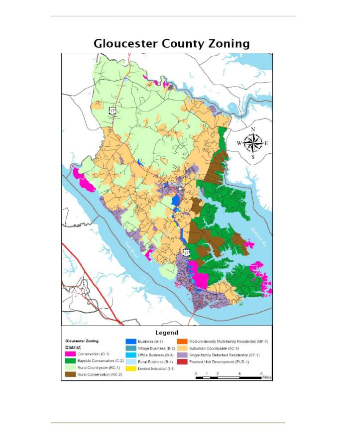
A Coastal Floodplain Management Plan for Gloucester County
44
July 2009
Figure 21
Source: County Base GIS layers were provided by United States Census Bureau and the County Zoning
GIS layers were provided by Gloucester County Information Technology/ GIS Department.
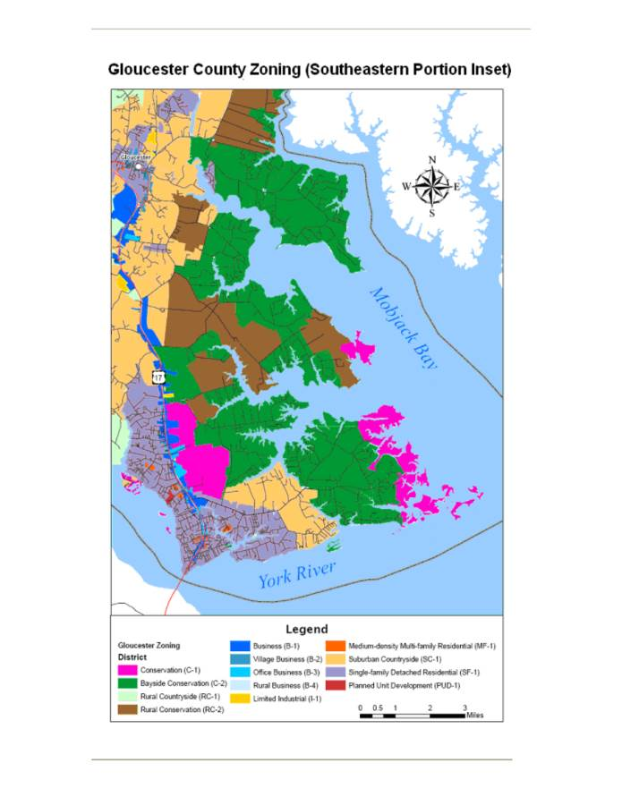
A Coastal Floodplain Management Plan for Gloucester County
45
July 2009
Figure 22
Source: County Base GIS layers were provided by United States Census Bureau and the County Zoning
GIS layers were provided by Gloucester County Information Technology/ GIS Department.
A Coastal Floodplain Management Plan for Gloucester County
46
July 2009
What Has Been Implemented: The zoning maps show that the vast majority of the
county’s flood-prone areas are currently zoned Conservation (C-1), Bayside Conservation
(C-2), and Rural Conservation (RC-2), all of which allow for low density development.
Each of these designations has a minimum lot size requirement for new development and
promotes clustering (Table 8).
Table 8: Zone Lot Size Requirement
Zone
Lot Size Requirement
Conservation (C-1)
No new development permitted
Bayside Conservation (C-2)
One dwelling unit per 5 acres
Rural Conservation (RC-2)
One dwelling unit per 5 acres
Suburban Countryside (SC-1)
One dwelling unit per 2 acres
Single Family Residential (SF-1)
One dwelling unit per 2 acres (without sewer & water )
Single Family Residential (SF-1)
One dwelling unit per 30,000 SF (sewer & water)
Source: Gloucester County, 1991
The minimum lot size requirement helps to limit the number of houses in the area.
During major coastal flooding fewer structures in the flood-prone area means less
potential for damage.
The county’s Comprehensive Plan encourages clustering in each of these zones to protect
the area’s scenic and environmental features through the preservation of open space and
to facilitate floodplain management activities. Clustering works by keeping larger lots
from being subdivided into smaller lots, yet allows the same number of structures to be
built. Clustering can be used to protect structures that develop within various portions of
the county’s flood-prone area (National Research Council, 2006). For properties located
further inland but still within a flood-prone area, clustering can prevent damage to
structures by locating them on higher ground. Rather than subdividing a 25 acre lot into
5 acre sub lots where multiple properties would sustain damage during minor flooding
events, clustering can keep most of the 25 acre lot undeveloped and allows owner to sell
development rights to five potential home owners who can cluster their houses on the
highest area on the 25 acres (Figure 23). This helps avoid flood damage for all of the
properties built on the original lot.
Figure 23: Clustering Inland
Typical Lot Subdivision Residential Cluster Lot

A Coastal Floodplain Management Plan for Gloucester County
47
July 2009
Figure 24 shows how clustering can protect structures developed on the coast by building
structures in reduced wave hazard areas on the lot.
Figure 24: Clustering on the Coast
Typical Lot Subdivision Residential Cluster Lot
During major coastal flooding events within the county, such as a Category 2 Hurricane
surge, the complete inundation of the southeastern portion of the county is likely and thus
clustering does not provide as much a benefit to development than during minor flooding
events.
Recommendation 5.2a: The County should continue to zone for low density
development and encourage residential clustering within flood-prone areas.
5.2b Building Regulations
The implementation of flood-resistant building regulations for new construction can
create safer communities across the county. These standards include criteria to protect
buildings from forces of nature associated with hurricanes, such as high winds and heavy
rainfall (Des Plaines Engineering Department, 2002).
What Has Been Implemented: The Virginia Uniform Statewide Building Code
(USBC) prescribes mandatory building regulations for construction, maintenance,
grading and proper drainage of structures to prevent water damage to the building.
Gloucester County Codes and Compliances Department Building Inspectors conduct
regular inspections throughout the construction process, including foundation, exterior
and interior framing, electrical, and plumbing (Gloucester County, 2007).
The county’s Subdivision Ordinance governs how land will be subdivided into individual
lots and mandates subdivision standards and procedures in regards to the construction,
location and infrastructure that will serve the lots, including sidewalks, utility lines,
sidewalks, and drainage ways (Gloucester County, 2007). Gloucester County building
regulations are governed by state law and are adequate.
Recommendation 5.2b: Gloucester County should continue to enforce building
regulations throughout the county.
5.2c Floodplain Development Regulations
The National Flood Insurance Program (NFIP) sets minimum standards for participation
in the program. The majority of the provisions are in the county’s building code and
A Coastal Floodplain Management Plan for Gloucester County
48
July 2009
subdivision ordinance. Others are accounted for in the county’s Floodplain Management
Ordinance, which was adopted in 1987 to manage present and future development in
flood-prone areas.
What Has Been Implemented: The Ordinance delineates and describes six flood
districts (Figure 9) and general development provisions for each (Table 9). The
Ordinance also mandates a permit requirement and a Design Flood Elevation (DFE)
requirement for all development in a flood zone (Gloucester County, 2002).
Table 9: Development Provisions for Flood Districts
Zone
Inundated by
100 year Flood
Base Flood Elevations
Shown
Mandatory Flood
Insurance
AE
Yes
Yes
Yes
A
Yes
No
Yes
VE and V
Yes
Yes
Yes
X and X500
No
No
No
Source: Gloucester County, 2002
The development provisions establish general and specific requirements for all
development in each flood district according to the type of flooding that the area
encounters. The development provisions for zones V and VE establish where and how to
build the structure in order to avoid damage from wave action, while provisions for zones
A and AE establish how to build the structure in order to avoid still-water flooding (see
5.3a Elevation and Acquisition Projects section of this plan for additional details on
building provisions).
The permit requirement mandates the identification of the proposed structure’s lowest
flood elevation, existing ground elevation, and the 100 year flood elevation. The permit
also requires identification of the method for elevating the proposed structure. These
requirements help County officials keep track of development in the flood zone.
The Gloucester County Design Flood Elevation requirement mandates that all new
construction and substantially damaged structures (those facing restoration costs of up to
50% of the total value of the structure before the damage occurred) in a flood zone be
elevated at least one additional foot above base flood elevation. This requirement
exceeds the NFIP’s minimum standard by requiring the additional foot as the minimum,
and helps to better protect new development from the type of flooding the county
experiences. (See 5.3a Elevation and Acquisition Projects section of this plan for
additional details on benefits of elevation.) No improvements to Gloucester County’s
Floodplain Management Ordinance are needed.
Recommendation 5.2c: The county should continue to require and enforce the
provisions of the Floodplain Management Ordinance.
5.3 Property Protection Activities
Property protection activities consist of modifications of pre-existing structures to protect
against flood damage. Most activities are managed and funded by individual property
owners, but local government can encourage property protection activities by seeking
financial assistance for the community through government grant programs (St.
Tammany Parish, 2004).
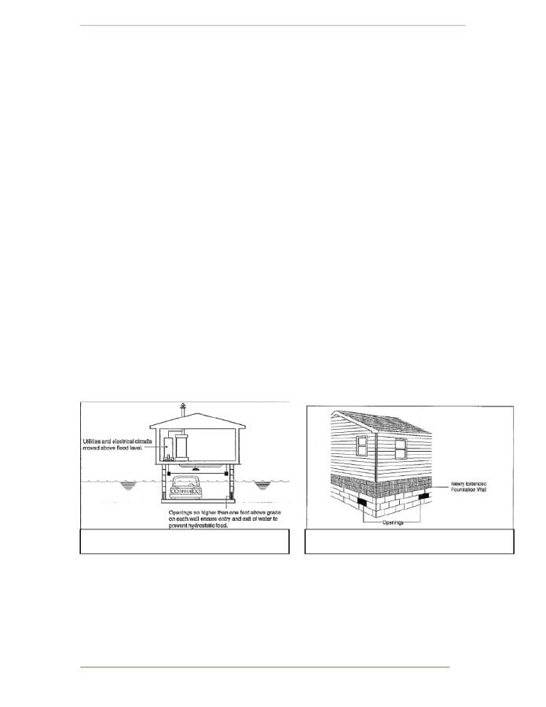
A Coastal Floodplain Management Plan for Gloucester County
49
July 2009
Property protection activities in Gloucester County have been implemented through:
a. Elevation and Acquisition Projects
b. Purchasing Flood Insurance
5.3a Elevation and Acquisition Projects
Structural elevation can reduce or eliminate future flood damage, lower flood insurance
premiums, add value to the house and increase parking and storage space in the house.
The elevation method applied to a structure depends on the flood zone designation. If a
structure is located in an area with high wind velocity and wave action (VE and V zone),
elevating can be done only through the use of columns or piles which are embedded
sufficiently below the soil to withstand erosion (Figure 25). This allows water and
floating debris to flow under the structure, thereby avoiding structural damage (FEMA,
1994). If a structure is located in an area with potential for only low to moderate water
depth and velocity (AE or A zone) elevating above the base flood elevation (BFE) may
only require raising the structure using a solid wall elevation technique (Figure 26). This
technique uses steel supports to raise the structure and then extends the foundation walls.
However, the enclosure area under the building must have openings to allow for the entry
and exit of flood waters to avoid hydrostatic forces which could cause the structure to
collapse (FEMA, 1994). Both of these techniques can also be used to elevate pre-existing
structures above the BFE. Gloucester Volunteer Fire and Rescue Department have
warned that their current equipment is limited in flood related scenarios with structures
elevated over 30 feet. They currently have an aerial device which has a height of 95 feet,
however in areas affected by flood this apparatus may not be able to respond due to
terrain and the weight from the vehicle. If there were a situation that would require them
to perform a rescue from a residence the longest ground ladder they carry is 35 feet in
height. They ask that when or if structures are raised that the highest window not exceed
30 feet for rescue purposes.
Property acquisition can reduce flood vulnerabilities within a community, protect
sensitive habitats and provide opportunities for recreational use. This requires local
government to buy property from residents in flood-prone areas and turn the properties
into open space which can be made into recreational areas for the community. There are
two types of acquisition projects: (1) basic acquisition and demolition, and (2) acquisition
and relocation of structures to areas outside of the flood zone (FEMA, 1998). Residents
wishing to relocate outside of the flood zone can sell their property to the local
Figure 25:
Typical Residential Elevation within a VE and V
Zone
Source: FEMA, 1994
Figure 26:
Typical Residential Elevation within an AE and E
Zone Source: FEMA, 1994

A Coastal Floodplain Management Plan for Gloucester County
50
July 2009
government at fair market value and use the money to relocate beyond the flood-prone
area. The strength of this type of property protection depends on the county’s acquisition
program and the severity of flooding in the community (FEMA, 1998).
What Has Been Implemented: The elevation and acquisition of properties significantly
reduces flood damage to new and pre-existing development in the flood zone.
Unfortunately, both are very costly endeavors. For residents who cannot afford the costs
associated with these mitigation techniques, the county actively pursues and organizes
grant funding opportunities, when funding is available. As an eligible community under
the FEMA Hazard Mitigation Grant Program (HMGP), the county can apply to receive
funding for the acquisition, demolition, and elevation of damaged structures after major
coastal storms hit the area. The amount of funding received through the program is
determined by the amount of damage sustained during the event and the strength of the
grant proposal. Residents who are interested in receiving financial assistance to elevate
their home can place their name on a list that the county refers to when considering which
properties to offer a slot on the grant proposal. The county has an active and on-going
Hurricane Residential Recovery Program in the southeastern portion of the county. The
county has successfully applied for and received grant funding from HUD/VDHCD as
well as FEMA/VDEM to implement the program.
A HUD/VDHCD Grant was awarded to Gloucester under the Urgent Needs Grant
Program after Hurricane Isabel in 2003. This $700,000 grant was used to elevate and
reconstruct seven (7) homes in the SE portion of the county. These properties did not
receive new foundations but rather new walls, kitchens and electrical.
There have been three (3) rounds of Post Disaster Mitigation (PDM) Funds awarded to
the county through the FEMA/VDEM Hazard Mitigation Grant Program. These were
awarded after Hurricane Isabel, Tropical Storm Gaston and Tropical Storm Ernesto to
once again repair damage to the SE portion of the county.
The post Hurricane Isabel FEMA Hazard Mitigation Grant amounted to just over
$4,000,000 and was expended in two (2) phases. There were a total of 51 properties that
were approved for assistance. Through May 1, 2009, twenty one (21) houses have been
elevated, (10) other properties have been purchased and the houses on them will be
demolished, five (5) houses await elevation and three (3) other properties are pending
sale to the county.
In terms of acquisition, the county currently has a list of properties that are being
acquired using FEMA HMGP funding from Hurricane Isabel and Tropical Storm Gaston.
As a requirement to receive these funds the county developed and adopted an Open Space
Management Plan in 2009. The purpose of this plan is to protect and conserve county
land, wetlands, and water for current residents and future generations. The Plan involves
the acquisition of sixteen properties that were enrolled in the program on a volunteer
basis, both with residential houses, which will be demolished per the terms of the HMGP,
and properties currently still in their natural state. Specifically, the Plan will allow the
county to: 1) Eliminate private property damage and loss of life through clearance of
residential homes, 2) Create opportunities for wetland mitigation, 3) Provide an
opportunity for a small nature trail for local school children and 4) Provide land for future
recreation opportunities for all county residents and visitors.

A Coastal Floodplain Management Plan for Gloucester County
51
July 2009
The post Tropical Storm Gaston FEMA Hazard Mitigation Grant award was for $208,000
and it will be used to elevate 3 houses. This project is scheduled for completion by
December 2008.
The post Tropical Storm Ernesto FEMA Hazard Mitigation Grant was approved for
$1,008,000 to elevate 12 properties as well as install “quick connects” for generators to
county shelters. These will be located at Peasely Middle School, Bethel Elementary
School and Botetourt Elementary School.
The county has hired the Richmond- based planning firm, K.W. Poore and Associates, to
write the grant application and to manage these projects once funded. The county plans
to pursue additional grant funding opportunities to continue with the residential
mitigation activities.
Recommendations for Improvement: Due to the time consuming nature and high cost
of structural elevation, County officials currently estimate that it will take until 2018 to
elevate all structures on the list. For this reason the plan focuses its efforts on voluntary
property acquisition as a priority in the flood zone. The guidelines of this program state
that any property under consideration to be acquired must enter the process voluntarily.
A large number of property owners in the flood zone might like to sell their property to
the county, but due to the amount of affected buildings and the limited availability of
grant funds the county cannot acquire every one of these properties. Thus a priority list
for property acquisition was created to indicate which properties should be acquired
before others. A set of criteria was followed to help determine which properties should
be considered for acquisition first. These were based on FEMA’s Hazard Mitigation
Grant Program requirements, criteria suggestions found in the FEMA “Property
Acquisition Handbook for Local Communities: A Summary for States”, the overall goals
of this plan, and the open space preservation goals stated in the Comprehensive Plan of
Gloucester County. In general the criteria promote; an increase in the amount of land
preserved as open space, and a reduction in the amount of flood damage to new and
existing properties in the flood prone areas of the community. Properties recently
elevated were omitted from prioritization because they have already received flood
mitigation efforts. Also, water-related commercial properties were omitted because of
their assumed acceptance of risk. The criteria used are as follows:
Priority 1: Properties that have suffered repetitive losses from flooding.
Data obtained from repetitive loss list.
Priority 2: Properties containing residential structures.
Data obtained from repetitive loss list.
Priority 3: Properties adjacent to previously acquisitioned lots.
Data obtained from county property records and GIS maps.
Priority 4: Properties in the same neighborhood as previously acquisitioned lots.
Data obtained from county GIS maps.
Priority 5: Properties on four acres of land or more.
Data obtained from county property records.
Priority 6: Properties that have access to natural resources (forest or waterfront).
A Coastal Floodplain Management Plan for Gloucester County
52
July 2009
Data obtained from county GIS maps.
Priority 7: Vacant lots
Data obtained from county property records.
The property acquisition priority list for Gloucester County is found in Table 10.
Table 10:
Suggested Repetitive Loss Acquisition Priority List
Suggested Repetitive Loss Acquisition Priority List
Property Address
Acres
Natural Resources
Vacant
1111 Severn Wharf Rd
2
Yes (water)
No
2222 Guinea Circle
4
No
Vacant
3333 Glass Rd
4
No
No
4444 Maundys Creek Rd
1
No
No
5555 Jenkins Neck Rd
2
Yes (water)
No
6666 Clements Ln
1
Yes
Vacant
7777 Jenkins Neck Rd
.5
Yes (water)
No
8888 Lucilles Ln
1
Yes (trees/ water)
No
9999 Moores Landing Ln
8
Yes (water & trees)
No
10 Thornton Ln
16
Yes (water & trees)
No
11 Horse Rd
0
Yes (water)
No
12 Kings Creek Rd
NA
No
No
13 Sandy Pines Ln
0
Yes (water)
No
14 Thornton Ln
16
Yes (water)
No
15 Ware Point Rd
NA
Yes (water & trees)
Vacant
This priority list is made up of fictitious data; the true data can not be published due to previsions of The
Privacy Act. This list is given as an example of what the actual list contains.
Recommendation 5.3a: The County should seek to acquire properties through voluntary
programs according to the priority list in order to increase the amount of land preserved
as open space, and to reduce the amount of flood damage to new and existing properties
in the flood prone areas of the community.
5.3b Purchasing Flood Insurance
Flood insurance is not a strategy to avoid flood damage; it merely helps offset the costs of
repairing or rebuilding a property after flood damage has occurred. The purchase of
flood insurance is a smart investment for any home owner. It has been reported that
select private insurance companies are “blue lining” the Tidewater area for flood
insurance. Allstate has recently stopped writing new flood insurance policies in 19
coastal communities: Accomack, Gloucester, Isle of Wight, King and Queen, Lancaster,
Mathews, Middlesex, Northumberland, Northampton, Southampton, Surrey, Sussex,
York counties and Chesapeake, Franklin, Hampton, Newport News, Norfolk, and
Virginia Beach. Nationwide is also withdrawing from any new coastal coverage in
Gloucester, Mathews, areas in Middlesex, and areas in Essex. State Farm reportedly will
not write new flood insurance policies within one mile of shoreline. These three private
A Coastal Floodplain Management Plan for Gloucester County
53
July 2009
insurance companies make up 55% of the private insurance market in Mid-Atlantic
Region (Middle Peninsula Planning District Commission, 2009).
What Has Been Implemented: In 1987, Gloucester became a participating community
in FEMA’s National Flood Insurance Program (NFIP). This participation enables
citizens to obtain federally backed flood insurance for their properties based on the
property’s location. As a participating member of the NFIP, Gloucester became eligible
to join the CRS program. While participation in the program is voluntary, the benefits
for citizens are great. Under the program, flood insurance premiums are modified based
on a point system related to the community’s efforts to reduce future flood damage and
go beyond the minimal national standards. The county currently has approximately 1,528
flood insurance policy holders (Middle Peninsula Planning District Commission, 2005).
Recommendations for Improvement: To gain further reductions in flood insurance
policy premiums the county must gain credits that will qualify the locality for a lower
CRS rating. One way to gain CRS credit is through the preparation of a floodplain
management plan for the county, which describes ways to improve existing flood
mitigation techniques.
Recommendation 5.3b: The County should adopt this Coastal Floodplain Management
Plan to help strengthen the community’s mitigation activities as well as lower insurance
premiums for policy holders.
5.4 Public Information Activities
Conducting public information sessions and providing citizens with all available
information relating to the hazards and protection measures will help strengthen the
community’s overall resistance to flood hazards through increased public awareness.
There are many ways that community leaders can get both general and property specific
information to citizens.
Public information activities in Gloucester County have been implemented through:
a. Community Educational Outreach Projects
b. Public Libraries and the County Website
c. Technical Assistance and Map Information
5.4a Community Educational Outreach Projects
Community educational outreach projects are run by the county and meant to provide
citizens with general flood hazard information. The projects encourage citizens to take
an active role in educating themselves of their property’s flood hazards so that they may
take the necessary steps to protect themselves and their property from flooding.
What Has Been Implemented: Gloucester County Department of Community
Education works with various County Offices that have been tasked with specific
outreach projects in order to administer a comprehensive community information,
education, and involvement program, which consists of:
An informational telephone helpline, which is operational during hurricanes and
other local emergency situations (Organized by the Department of Community

A Coastal Floodplain Management Plan for Gloucester County
54
July 2009
Education).
An annual flood hazard awareness campaign throughout the community
(Organized by the Department of Codes Compliance).
The publication of informational brochures and fliers for special county meetings
and forums related to flooding (Organized by the Department of Emergency
Services).
The development of the Citizens Preparedness Guide (a free seasonal hurricane
preparedness guide that provides citizens with general information of the area’s
coastal flooding hazard, how to prepare for a hurricane, and what to do after a
hurricane), (Organized by the Department of Emergency Services).
The Community Emergency Response Team (CERT) program that educates
citizens about disaster preparedness for hazards that may affect their area. It
trains citizens in basic disaster response skills such as fire safety, search and
rescue, team organization, and disaster medical operations. It also encourages its
members to take an active role in their community by participating in emergency
preparedness projects (Organized by the Department of Emergency Services).
An annual hurricane preparedness exposition, which involves local radio stations,
businesses (Wal-Mart, Lowes, and Home Depot), and county citizens. Each
business is responsible for providing in-store displays with preparedness items
and educational posters demonstrating techniques and materials that can retrofit a
home to decrease or avoid flood damage (Organized by the Department of
Emergency Services).
Annual hazard awareness campaigns throughout the community, in relation to
fires, hurricanes, and tornados (Organized by the Department of Emergency
Services).
Emergency information updates for severe weather and natural disasters
(Organized by the Department of Emergency Services).
Recommendations for Improvement: The existing educational outreach programs
effectively utilize outreach media to provide general flood safety and preparedness
information to the public. The county should strengthen its program by specifically
targeting property owners in flood zones with a specialized educational program that
provides detail specific information relating to property protection, flood safety and flood
insurance. The program should be aimed at educating and motivating the average
property owner in the flood zone to investigate and implement property protection
techniques. The program should highlight examples of property protection techniques
that have been implemented in the local area (success stories). The program should
identify and resolve common misunderstandings that many property owners in the flood
zone may have. By providing specialized information to residents in the flood zone the
county can help lower the amount of damage in the flood zone.
Recommendation 5.4a: The County should send an annual mass mailing (in the
Beehive) with specialized information relating to property protection, flood safety and

A Coastal Floodplain Management Plan for Gloucester County
55
July 2009
flood insurance to owner in of property in a flood zone.
5.4b Public Libraries and the County Website
Public libraries and the Gloucester County website are key resources for both general and
property specific information on flood hazard preparation and mitigation.
What Has Been Implemented: The public libraries in Gloucester County maintain an
array of books on hurricanes, flood hazards, flood safety, and flood mitigation
techniques. A search for “flood” and related topics in the Gloucester County Public
Library’s catalog found four references that would be of use to property owners seeking
information on flood mitigation techniques, additional titles provided general information
on various types of natural disasters and historic flood information throughout the United
States.
The county maintains an official website that gives citizens 24 hour access to the
homepages of every department and service in the locality. The website has extensive
hazard-related educational materials for citizens, including:
Gloucester Connection Email News Service (A free county email news service
which alerts citizens about emergency services and community education
programs).
Links to local travel alerts, weather, and tidal readings.
Emergency preparedness information (online brochures and handouts).
Emergency resource links for children and seniors.
A link to Gloucester County Television Channel 48 (Local Government Channel).
The Citizens Preparedness Guide (seasonal hurricane preparedness guide).
The Middle Peninsula Hazards Mitigation Plan (describes all natural hazards in
the area).
The County webpage also boasts an impressive web-based Geographic Information
System (web-GIS), maintained by the Department of Information Technology/GIS. The
web-GIS is a computer map-making application that allows anyone with computer access
to obtain information on any property in the county. Notably, this application allows
users to create detailed maps relating to hurricane surge, flood zones, topography, and
aerial photography. These features enable the general public to take an active role in
educating themselves about the flood risk in their area.
Recommendations for Improvement: Residents in Gloucester County need a central
location where they can get all the information they need to prepare for flooding events
caused by severe weather. One potential solution is for Gloucester County libraries to
host a permanent educational flood preparedness display with printed educational
material relating to flooding in the area. The display should have hard copies of all the
material available online including county surge maps and flood zone maps, and the
A Coastal Floodplain Management Plan for Gloucester County
56
July 2009
Beehives’ Citizens Preparedness Guide. Public flood hazard education sessions may also
be held at the libraries. In addition, the library could pull all books related to flood
preparedness from normal circulation and group them with the display as reference items
not available for check-out, allowing residents to have continued access to these books.
Recommendation 5.4b: The County should adopt a central location where general
information on flood preparedness, flood insurance, and floodplain management is easily
accessible to the public in a hard copy format.
5.4c Technical Assistance and Map Information
Providing citizens easy access to property specific flood hazard information increases the
community’s overall awareness of potential flood hazards and may motivate property
owners to take steps to mitigate their property against flood hazards. However, this
information is useless if community members cannot understand its technical jargon or
easily access it on-line. Therefore technical assistance opportunities are a vital part of
disseminating property-specific information (St. Tammany Parish, 2004).
What Has Been Implemented: County residents in search of property specific flood
hazard information can utilize the FEMA Flood Insurance Rate Map (FIRM), which are
located in the Building Office at the Gloucester Courthouse area. For assistance
interpreting the FIRM, citizens can contact staff in the Department of Codes Compliance.
Citizens can rely on library resources and County officials in the Department of Codes
Compliance as a starting point for ideas and suggestions on various retrofitting strategies
specific to their property. Codes and Compliance staff visit properties in the community
and offer pointers for improvements or suggest qualified contractors that can do the work.
Recommendations for Improvement: Gloucester County currently provides basic
technical assistance for citizens seeking FIRM interpretations and retrofitting ideas, but
there is little advertisement of these services. With proper advertisement, these services
will be more extensively utilized by citizens seeking property-specific information,
helping them to take steps to make their properties and the community more resistant to
flood hazards.
Recommendation 5.4c: Gloucester County should advertise the technical assistance
opportunities it provides in relation to flood mitigation and preparedness, preferably in
the same central locations where other flood-hazard information is available, as suggested
in Recommendation 5.4b.
5.5 Emergency Service Measures
Emergency service measures are designed to protect life and property in the event of a
disaster or crisis situation. This plan is primarily interested in the emergency service
measures which protect property.
Emergency service measures have helped strengthen the community’s resistance to flood
hazards through:
a. Hazard Identification
b. Warning
A Coastal Floodplain Management Plan for Gloucester County
57
July 2009
5.5a Hazard Identification
The local community relies on the Emergency Services Department and the National
Weather Service to identify the time, location and severity of flooding in Gloucester
County. Through advanced hazard identification emergency services can prepare citizens
to take the appropriate actions to minimize the loss of property due to extreme conditions
(St. Tammany Parish 2004, 7-12).
What Has Been Implemented: Hurricanes, tropical storms, and nor’easters are
identified and tracked by the National Oceanic and Atmospheric Administration (NOAA)
National Hurricane Center in Miami, Florida. The Emergency Services Department then
considers this information to determine how severely these weather patterns will affect
the community. The Department utilizes local tide tables and a computer modeling
program, SLOSH (Sea, Lake, and Overland Surges from Hurricanes), to run surge
models based on information from the NOAA’s National Hurricane Center.
7
The models
can help staff identify the areas of the county most affected by coastal flooding from
specific storms. No improvement to Gloucester County’s hazard identification process is
needed.
Recommendation 5.5a: The County should continue to utilize its hazard identification
process.
5.5b Warning
Once a possible flooding threat has been identified, the public must be warned. Proper
precautions or evacuations can then be taken to prevent or decrease loss of life and
property. Advanced warnings of oncoming seasonal coastal storms can provide residents
with additional preparation time that may be utilized to install or properly prepare any
last minute property protection measures.
What Has Been Implemented: The National Weather Service can issue either a
Hurricane Watch (hurricane conditions within 36 hours), or a Hurricane Warning
(sustained winds >74 mph expected within <24 hours) (NOAA: NWS). More specific
warnings are communicated by Emergency Services staff. Gloucester County utilizes the
Reverse 911 System (a mass telephone notification system) that allows Emergency
Service staff to quickly contact citizens via home telephone to alert them of what they
need to do to be safe in the event of an emergency. The telephone directory is updated
bi-annually. In the event that the Reverse 911 System is down, Emergency Services can
organize door-to-door emergency warning efforts to notify citizens. The local fire
stations, Sheriff’s Office, and a volunteer citizens group (CERT) provide the manpower
to make this type of warning system possible, provided their number of available
manpower allows for it. Bay Aging (a non profit organization that supports elderly
citizens in the community) participates in door-to-door checks of elderly citizens and
organizes a program to bring food to elderly citizens who choose to stay at home during
evacuations.
7
Gloucester utilizes tidal readings from 3 tidal stations; the Yorktown United States Coast Guard (USCD)
Training Center station (updated every 4 hours), the Sewell’s Point station (updated every 8 hours), and the
Chesapeake Bay Bridge tunnel station (updated every 8 hours). Notably Virginia Institute of Marine
Science (VIMS) station on Oyster Point Pier provides “real time” readings (updated every six minutes).

A Coastal Floodplain Management Plan for Gloucester County
58
July 2009
Gloucester County participates in the Emergency Alert System (EAS). This system is a
network of AM and FM radio and television stations that can be activated in case of an
emergency. Local news stations are great resources before, after, and during a storm.
They provide up-to-date information that, unlike the internet, is accessible to the majority
of the public.
Recommendations for Improvement: The County’s existing emergency warning
system relies on home telephone, television, radio, email, and door-to-door service as its
primary means to warn citizens of pending severe weather. However, for many citizens
home telephone lines have become a thing of the past due to the decreasing costs of
cellular phones and the increasing need to communicate on the go. The county can
strengthen its reverse 911 system by including cellular telephone notifications in its
system. By providing additional opportunities for citizens to receive early warnings of
seasonal coastal storms citizens will have more time before the storm arrives, which can
be used to implement any last minute protection measures to their homes.
Recommendation 5.5b1: The County should adopt a voluntary cellular telephone
directory, which will work in unison with the existing reverse 911 system.
Recommendations for Improvement: The current warning system does not include
Gloucester County residents who do not own or have access to home telephones, radios,
or televisions. By adopting an outdoor emergency warning system based on sirens (with
loud speaker capability) in areas of frequent congregation throughout the community, the
county will be able to warn residents in high risk areas both pre and post emergency
situations. Advanced warnings of oncoming seasonal coastal storms will provide
residents with additional preparation time that may be utilized to install or properly
prepare any last minute property protection measures, such as moving furniture or other
valuables to higher elevations within the structure, or boarding up windows with
plywood. After severe storms, high risk areas can remain without power or phone service
for several days. The outdoor warning system can broadcast instructions to residents that
have no access to telephone, radio, or television. The broadcast can direct returning
residents to safer roads after a hurricane. This system can also be utilized in case of
tornados, hail storms, terrorist attacks, and other emergency situations.
A set of criteria was followed to help determine where the outdoor warning system’s
sirens should be located. These were based on FEMA’s “Outdoor Warning Systems
Guide”. The criteria used are as follows:
Priority 1: Locate sirens in the areas with most severe flood hazard.
Priority 2: Locate sirens in areas of frequent congregation.
Priority 3: Locate sirens in areas with the highest density of houses.
Priority 4: Relative location to other sirens (minimize overlapping of coverage area).
Modern sirens have clear omni-directional vocal broadcast capability within a range of up
to 3,700 ft (FEMA 1980, 9). Gloucester County’s outdoor emergency warning system
should initially consist of 17 outdoor sirens located throughout the southeastern portion

A Coastal Floodplain Management Plan for Gloucester County
59
July 2009
of the county (Figure 27). These sirens should be placed throughout the highest density
neighborhoods, as well as areas of frequent congregation.
8
The system’s control center
should be housed, managed and maintained by the Emergency Services Department. The
initial cost of the system would be based on the number of sirens put into place
throughout the community. Based on the specifications of Acoustic Technology, Inc. and
their HPSS32 siren, the estimated cost would be $300,000 - $400,000 (ATI Systems).
Each additional siren would cost an extra $20,000 (including installation). Initial funding
for this system would come from FEMA Homeland Security grants.
Recommendation 5.5b2: Gloucester County should install an outdoor emergency
warning system within the flood prone southeastern portion of the county.
8
It is when people are out shopping, in restaurants, at the barber shop, or in church, that they are away from
home phones, radios, and televisions.
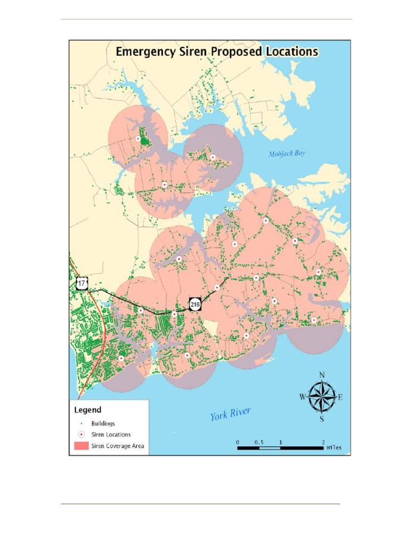
A Coastal Floodplain Management Plan for Gloucester County
60
July 2009
Figure 27
Source: County Base GIS layers were provided by United States Census Bureau and the County Addressed
Building GIS layer was provided by Gloucester County Information Technology/ GIS Department.
A Coastal Floodplain Management Plan for Gloucester County
61
July 2009
5.6 Natural Resource Protection
Natural resource protection is a special type of mitigation activity that aims to preserve or
restore natural areas through regulations. These regulations may indirectly benefit
floodplain management activities in flood hazard areas (Des Plaines Engineering
Department, 2002).
What Has Been Implemented: Gloucester County adopted the Chesapeake Bay
Preservation Ordinance in 1991 as a response to the Chesapeake Bay Preservation Act
(CBPA). The CBPA is a land use management program that aims to reduce sediment and
pollution emptied into the bay through runoff from bordering lands. All of Gloucester
County has been designated a Chesapeake Bay Preservation Area, due to its proximity to
the Bay. The ordinance requires development in the county to meet certain performance
standards that aim to minimize the type and the amount of runoff that goes into the bay.
The ordinance designates areas of the county nearest the shoreline as Resource Protection
Areas (RPA). The ordinance also designates Resource Management Areas (RMA) that
buffer the RPA. The RMA is located landward and adjacent to the RPA, and includes
areas with highly erodible soils, steep slopes, highly permeable soils, and non-tidal
wetlands. These are land areas most prone to erosion, flooding, and groundwater
contamination as a result of improper development (Gloucester County, 2005).
The ordinance requires a 100 foot buffer zone along all shorelines, which is mirrored by
the Floodplain Management Ordinance in regards to VE zones in Gloucester County.
The 100 foot buffer requirement acts to restore the natural functions of the floodplain and
indirectly helps to minimize flood damage to new development along the coast, by
forcing it to occur further from the shoreline and from potential wave action and tidal
flooding.
The ordinance aims to improve environmental health by requiring the preservation of
vegetation along the coast. The ordinance recommends that native vegetation should be
retained wherever practical, and new plants should be introduced in locations that will be
most affected by runoff. By mandating that vegetation be preserved along the coast the
ordinance helps prevent erosion and sedimentation in case of a flood (FEMA, 1994).
These buffers help to slow storm water runoff and protect against shoreline erosion.
Other notable ordinances linked to the Chesapeake Bay Preservation Area Ordinance are
the Erosion and Sediment Control Ordinance, which establishes requirements for the
control of erosion and sedimentation in the county, and the Wetlands Zoning Ordinance,
which regulates the use of wetlands within the county. The ordinance also requires any
new development to provide a storm water maintenance agreement to the county.
Recommendation 5.6: The County should continue to enforce the Chesapeake Bay
Preservation Ordinance, the Erosion and Sediment Control Ordinance, and the Wetland
Zoning Ordinance.
Recommendation 5.6a: The County should develop a Storm Water Management Plan
that will help regulate storm water throughout the county.
A Coastal Floodplain Management Plan for Gloucester County
62
July 2009
6. Action Plan
Chapter 2 defines the flood problem that the county faces. Chapter 3 analyzes the
county’s vulnerabilities. Chapter 4 sets two overall goals and four objectives for this plan
and Chapter 5 describes existing mitigation strategies and recommendations for
effectively achieving these goals. This chapter describes a plan of action for
implementing the recommendations.
Goal 1: Protect public and private property from damage caused by
coastal flooding hazard.
Objective 1.1: Prevent roadways in the County from being damaged during coastal
flooding.
Recommendation 5.1b1 (Structural Improvement Activities): The County should
utilize the road improvement priority list to prioritize the allocation of scarce resources to
projects that support the largest number of unmitigated pre-FIRM structures in the SFHA.
Department Responsible: Planning and Emergency Services
[Tasks]
1) The Planning and Emergency Services Departments should coordinate with the
VDOT Residency Office and the Board of Supervisors to allocate transportation
funds towards road repair for prioritized roads (when funds become available).
Time Table: Ongoing
Budget Impacts: Minimal staff time
Recommendation 5.1b2 (Structural Improvement Activities): The County should
continue to monitor State Route 649/ Maryus Road and if washouts from flooding persist
the County should improve the road to withstand coastal floodwaters by elevating
damaged sections and installing more appropriate roadway drainage crossings. This will
help ensure emergency responders can gain access to 276 pre-FIRM structures built in
the SFHA after a major coastal flooding event.
Department Responsible: Planning and Emergency Services
[Tasks]
1) Continue to monitor State Route 649/ Maryus Road during future storm events.
2) If needed the Planning and Emergency Services Departments should coordinate
with the VDOT Residency Office and the Board of Supervisors to allocate
transportation funds towards repairing Maryus Road to VDOT’s current Secondary
Road Standards.
3) VDOT should perform a road elevation and drainage study on the road to
determine the specifics of needed improvements.
Time Table: Years 1 & 2
Budget Impacts: Minimal amount of staff time
Transportation Budget
Recommendation 5.1b3 (Structural Improvement Activities): The County should
develop a semiannual ditch maintenance program for the southeastern portion of the
A Coastal Floodplain Management Plan for Gloucester County
63
July 2009
County. This will help residents in flood prone areas of the County safely utilize the
roadways within their community during normal storm events as well as provide
additional time for evacuation during the days before a coastal storm event.
Department Responsible: Planning and Emergency Services
[Tasks]
1) The Planning and Emergency Services Departments should coordinate with the
VDOT Residency Office and the Board of Supervisors to determine how best to
develop and fund a semiannual ditch maintenance program that meets VDOT
standards and adequately addresses the concerns of citizens in the area.
Time Table: Years 1 & 2
Budget Impacts: Minimal amount of staff time
Transportation Budget
Recommendation 5.1b4 (Structural Improvement Activities): The County should
keep detailed records of which roads in the county flood, how often and to what extent.
This will help determine which additional roads in the county need to be considered for
structural improvements and or other mitigation strategies.
Department Responsible: Emergency Services
[Tasks]
1) The Emergency Services Department should coordinate with the VDOT
Residency Office to determine which roads in the county frequently flood and to
what extent.
Time Table: Continuous, starting year 1
Budget Impacts: Minimal amount of staff time
Recommendation 5.1b5 (Structural Improvement Activities): The County should
consider permanent road signage with gauges to mark high water on frequently flooded
roads in the County. This will help make it safer for residents to gauge the depth of water
on roadways before attempting to pass the road. These signs should be located on the
lowest shoulders of the road and should be checked for proper functioning prior to a
storm event.
Department Responsible: Emergency Services
[Tasks]
1) The Emergency Services Department should coordinate with the VDOT
Residency Office and the Board of Supervisors to determine how best to locate
and fund a high-water signage program that will meets VDOT standards and
adequately addresses the concerns of citizens in the area.
Time Table: Years 1 & 2
Budget Impacts: Minimal amount of staff time
Transportation Budget
Objective 1.2: Protect new and existing development in the County’s flood-prone areas
from damages caused by coastal flooding.
Objective 1.3: Protect critical facilities from being damaged during coastal flooding.

A Coastal Floodplain Management Plan for Gloucester County
64
July 2009
Recommendation 5.2a: (Preventative Activities): The County should continue to zone
for low density development and encourage residential clustering within flood-prone
areas.
Recommendation 5.2b: (Preventative Activities): Gloucester County should continue
to enforce building regulations throughout the county.
Recommendation 5.2c: (Preventative Activities): The County should continue to
require and enforce the provisions of the Floodplain Management Ordinance.
Recommendation 5.3a (Property Protection Activities): The County should seek to
acquire properties through a voluntary program according to the priority list in order to
increase the amount of land preserved as open space, and to reduce the amount of flood
damage to new and existing properties in the flood prone areas of the community
Department Responsible: Planning, Codes Compliance, and Emergency Services
[Tasks]
1) Adopt a priority acquisition list for repetitive loss properties
2) Send a letter to each property owner on the list to determine if they are interested
in the voluntary program.
Time Table: Year 1
Budget Impacts: Minimal staff time
Recommendation 5.3b: (Property Protection Activities): The County should adopt this
Floodplain Management Plan to help strengthen the community’s mitigation activities as
well as lower insurance premiums for policy holders.
Department Responsible: Department of Planning and Codes Compliance
[Tasks]
1) Bring the plan to the Planning Commission for review
2) Bring the plan to the Board or Supervisors
3) Revise the plan if necessary, hold a public hearing
4) Adopt the plan
5) Planning Committee Provides Annual Maintenance on the adopted plan
Time Table: Year 1
Budget Impacts: Minimal amount of staff time
Recommendation 5.6: (Natural Resource Protection Activities): Gloucester County
should continue to require and enforce the Chesapeake Bay Preservation Ordinance, the
Erosion and Sediment Control Ordinance, and the Wetland Zoning Ordinance.
Recommendation 3.4: (Safety & Health Hazards): The County should assist residents
with existing fuel, oil and propane tanks that are not secured by providing tie-down
assistance.
Department Responsible: Department of Codes Compliance and Emergency Services
[Tasks]
1) Identify properties with existing fuel tanks that are not tied down

A Coastal Floodplain Management Plan for Gloucester County
65
July 2009
2) Identify funding sources
Time Table: Year 1
Budget Impacts: Fair amount of staff time
Recommendation 3.4: (Safety & Health Hazards): The County should examine the
public health, safety and economic impacts associated with the increased use of
alternative septic systems in flood prone areas.
Department Responsible: Emergency Services, Virginia Department of Health, and the
Board of Supervisors
[Tasks]
1) Identify impacts to the community
2) Develop policy which addresses these impacts
Time Table: Year 1 & 2
Budget Impacts: Large amount of staff time
Recommendation 2.4: (Climate Change): As more data become available the County
should evaluate the potential impact of climate change on the community, particularly
with respect to its wetlands, and consider potential management options.
Department Responsible: Emergency Services and the Board of Supervisors
[Tasks]
1) Identify impacts to the community
2) Develop policy which addresses these impacts
Time Table: Year 3
Budget Impacts: Large amount of staff time
Recommendation 5.6a: The County should develop a Storm Water Management Plan
that will help regulate storm water throughout the county.
Department Responsible: Codes and Compliance and the Environmental Department
[Tasks]
1) Identify impacts to the community
2) Develop policy which addresses these impacts
Time Table: Year 3
Budget Impacts: Large amount of staff time
Recommendation 5.1a: (Structural Improvement Activities): The County should
continue to implement the annual dam inspection and regular maintenance program, as
well as continue to participate in the National Dam Safety Program.
Goal 2: Maximize citizen actions to protect private properties.
A Coastal Floodplain Management Plan for Gloucester County
66
July 2009
Objective 2.1: Ensure that residents are given adequate warning of potential coastal
floods.
Recommendation 5.5a: (Natural Resource Protection Activities): The County should
continue to utilize its hazard identification process.
Recommendation 5.5b1: (Emergency Service Measures): The County should adopt a
voluntary cellular telephone directory, which will work in unison with the existing
reverse 911 system.
Departments Responsible: Emergency Services
[Tasks]
1) Organize a voluntary cellular telephone number directory
2) Publicize the service (Local news paper and on the county website)
3) Update reverse 911 directories to include cellular telephone numbers
Time Table: Year 1
Budget Impacts: Minimal amount of staff time
Minimal advertising costs
Recommendation 5.5b2: (Emergency Service Measures): Gloucester County should
install an outdoor emergency warning system within the flood prone southeastern portion
of the county.
Departments Responsible: Emergency Services and Planning
[Tasks]
1) Apply for funding (Possible funding sources: FEMA’s Homeland Security Grant
Program, and its Pre-Disaster Mitigation Grant Program)
2) Initial contract bidding with various outdoor warning system companies
3) Installation of sirens
4) Train Emergency Service Staff to use the system
5) Advertise the warning system
6) Test the sirens
Time Table: Years 5
Budget Impacts: Extensive amount of staff time and resources
Costs of the system (estimated at $300,000- $400,000)
Minimal costs associated with training and advertising
Objective 2.2: Ensure that residents can easily obtain all general and property specific
information relating to flooding and flooding risk.
Recommendation 5.4a (Public Information Activities): The County should send an
annual mass mailing with specialized information relating to property protection, flood
safety and flood insurance to every property owner in a flood zone.
Departments Responsible: Codes Compliance and Emergency Services
[Tasks]
1) Develop an informational news letter
2) Send the news letter to everyone in a flood zone

A Coastal Floodplain Management Plan for Gloucester County
67
July 2009
Time Table: Year 1
Budget Impacts: Initially this will consume large amounts of staff time and
resources after the process is worked out staff time needed will
decrease Minimal printing costs
Recommendation 5.4b: (Public Information Activities): The County should adopt a
central location where general information on flood preparedness, flood insurance, and
floodplain management is easily accessible to the public in a hard copy format.
Department Responsible: Emergency Services
[Tasks]
1) Determine an appropriate location, possibly the library.
2) Collect and inventory existing educational material from every department in the
county.
3) Obtain additional copies of material from original source (as needed).
4) Develop additional educational material (as needed).
5) Install the educational material at appropriate location
6) Advertise the activity to residents (Local newspaper and on the County website)
Time Table: Year 1
Budget Impacts: Minimal amount of staff time
Costs to purchase additional educational materials
Costs to print additional educational materials
Minimal advertising costs
Recommendation 5.4c: (Public Information Activities): Gloucester County should
advertise the technical assistance opportunities it provides in relation to flood mitigation
and preparedness, preferably in the same central locations where other flood-hazard
information is available, as suggested in Recommendation 5.4b.
A mass mailing that advertises the various technical assistance opportunities the county
offers should be sent to every residence in the county. These services should continue to
be advertised on the County’s website.
Department Responsible: Codes Compliance
[Tasks]
1) Develop material that explains the technical assistance opportunities the County
offers.
2) Send mass mailings
Time Table: Year 1
Budget Impacts: Initially this will consume large amounts of staff time and
resources but after the process is worked out, staff time needed
will decrease.

A Coastal Floodplain Management Plan for Gloucester County
68
July 2009
7. Plan Adoption
At the May 5, 2009 meeting of the Gloucester County Board of Supervisors the Board
passed a resolution that authorized the Planning Department and the Department of
Codes Compliance to move forward with the preparation of a Floodplain Management
plan that meets FEMA CRS program requirements as well as establish a planning
committee to annually evaluate and review the plan once adopted (see Appendix H).
A schedule for adoption of the plan is:
Planning Commission Review
- Public Hearing
- Recommendation
Board of Supervisors Review
- Public Hearing
- Adoption
Annual Evaluation & Maintenance

A Coastal Floodplain Management Plan for Gloucester County
69
July 2009
8. Plan Maintenance
The following activities should be conducted following adoption by the BOS of this plan.
The monitoring, evaluating and updating of this plan shall be done on a yearly basis and
shall be the responsibility of the Planning Committee that was charged with this task.
The first yearly evaluation of the adopted Floodplain Management Plan will be done after
FEMA’s final approval of the plan. For consistency purposes, the same evaluation tool
will be used by the review planning committee to annually review the plan.
1) A written evaluation tool will be distributed approximately 1 month before the annual
evaluation date for the plan.
2) The Review Planning Committee will solicit input for evaluation directly from
residents in the community who have benefited from flood mitigation projects.
3) Convene meeting of the committee to go over evaluations
4) Develop goals and mini-strategies to be accomplished in the next year for the plan.
5) Provide FEMA/VDEM with a written evaluation report of progress/ obstacles/
opportunities in implementing mitigation strategies in the plan.
6) Identify possible future revisions to the plan and notify FEMA/VDEM in writing of
the proposed revisions.
7) Provide follow-up assistance as requested by committee members with strategy
implementation.

A Coastal Floodplain Management Plan for Gloucester County
70
July 2009
References
ATI Systems. "Emergency Warning System." ATI Communication Application.
Available from http://www.atisystem.com/community.htm. Internet; accessed 10,
April 2007.
CDC. 2006. Mold Prevention Strategies and Possible Health Effects in the Aftermath of
Hurricanes and Major Floods: US Department of Health and Human Services,
CDC. Available from:
http://www.cdc.gov/mmwr/preview/mmwrhtml/rr5508a1.htm (accessed June 10,
2009).
Des Plaines Engineering Department. 2002. A Plan for Repetitive Flooding in Des
Plaines. Park Forest: French and Associates, Ltd. Available from:
http://www.desplaines.org/Services/FloodProtection/RepLossPlans/RepLossPlan0
21001.PDF (accessed May 15, 2007).
Department of Environmental Quality. Waste Management Issues for hurricane Isabel
Cleanup. Washington DC: DEQ. Available from:
http://www.deq.state.va.us/waste/pdf/guidance/hurwmi.pdf (accessed May 24,
2009).
Federal Emergency Management Agency. 1980. Outdoor Warning Systems Guide.
Washington DC: FEMA. Available from:
http://www.oregon.gov/OOHS/OEM/plans_train/Tsunami/fema_cpg_1_17_outdo
or_warning_guide.pdf (accessed April 10, 2007).
Federal Emergency Management Agency. 1987. Flood Insurance Study, Gloucester
County, Virginia and Unincorporated Areas. Washington DC: FEMA.
Federal Emergency Management Agency.1994. Mitigation of Flood and Erosion
Damage to Residential Buildings in Coastal Areas. Washington DC: FEMA.
Available from: http://www.fema.gov/library/viewRecord.do?id=1643 (accessed
May 20, 2007).
Federal Emergency Management Agency. 1998. Property Acquisition Handbook for
Local Communities: A Summary for States. Washington DC: FEMA. Available
from: http://www.fema.gov/pdf/government/grant/resources/hbfullpak.pdf
(accessed September 20, 2007).
Federal Emergency Management Agency. 2006. “Anchor Fuel Tanks.” Available from:
http://www.fema.gov/plan/prevent/howto/how2005.shtm Internet; accessed May
23, 2007.
Federal Emergency Management Agency. 2006. CRS Coordinator's Manual, Community
Rating System. Washington DC: FEMA. Available from:
http://training.fema.gov/EMIWeb/CRS/Resources-mp.htm (accessed February 25,
2007).

A Coastal Floodplain Management Plan for Gloucester County
71
July 2009
Federal Emergency Management Agency. 2007. "Guinea Residents of Gloucester County
Elevate Homes after Isabel." Best Management Practices and Case Studies.
[Online .] FEMA. 13 September 2007. Available from:
htttp://www.fema.gov/mitigationbp/brief.do?mitssId=982. (accessed October 4,
2007).
Federal Emergency Management Agency. 2007. The Risk is Real Mitigation Works:
Mitigation Best Practices. Washington DC: FEMA. Available from:
http://www.fema.gov/mitssdata/BestPracticesAndCaseStudies.pdf. (accessed
September 10, 2007).
Gloucester County. 1991. The Comprehensive Plan for Gloucester County, Virginia.
County of Gloucester.
Gloucester County. 2001. Gloucester County Disaster Solid Waste Plan. County of
Gloucester.
Gloucester County. 2002. Emergency Operations Plan. County of Gloucester.
Gloucester County. 2005. Gloucester County's Chesapeake Bay Preservation Area
Development Handbook. County of Gloucester. Available from:
http://www.gloucesterva.info/codes/Environment/Documentation/ChesBayHandb
ookMay2005.pdf (accessed September 30, 2007).
Gloucester County. 2006. Being Prepared Begins With You: Gloucester County Citizens
Preparedness Guide. County of Gloucester.
Gloucester County. 2007. Code County of Gloucester, Virginia. County of Gloucester.
Available from:
http://www.municode.com/resources/gateway.asp?pid=10843&sid=46 (accessed
April 10, 2007).
Gloucester County. 2007. Integrated Mosquito Management Program. Gloucester
County Mosquito Control Commission.
Gloucester County. “Gloucester County GIS Layers.” Provided by Gloucester County
Information Technology/ GIS Department. [GIS Files.] accessed March 20, 2007.
Gloucester County. 2009. Emergency Action Plan. County of Gloucester.
Google. "Google Maps." Available from http://maps.google.com/. Internet; accessed 3
December 2007.
Google. "Google Images." Available from http://images.google.com/. Internet; accessed
24 May 2009.
Hampton Roads Emergency Management Committee. 2006. Storm Surge FAQs.
HREMC. Available from: http://www.hremc.org/HREMC_StormSurgeFAQS.pdf
(accessed March 10, 2007).
A Coastal Floodplain Management Plan for Gloucester County
72
July 2009
Middle Peninsula Planning District Commission. 2005. Middle Peninsula Natural
Hazards Mitigation Plan. MPPDC. Available from:
http://www.mppdc.com/ahmp/FInal_compressedfilesize.pdf (accessed February
5, 2007).
Mindsites Group, LLC. "Geo Community." GIS Data Depot. Available from:
http://data.geocomm.com. Internet; accessed 23 March 2007.
NASA/Goddard Space Flight Center: Scientific Visualization Studio. “MODIS Rapid
Response Team.” NASA Goddard Space Flight Center. Available from:
http://rapidfire.sci.gsfc.nasa.gov (accessed March 20, 2007).
National Oceanic and Atmospheric Administration: Coastal Services Center. "Historical
Hurricane Tracks." Hurricane Mapping Tool. Available from:
http://maps.csc.noaa.gov/hurricanes/. Internet; accessed 20 March 2007.
National Oceanic and Atmospheric Administration: Coastal Services Center. "Risk and
Vulnerability Assessment Tool.”. Available from:
http://www.csc.noaa.gov/rvat/criticalEdd.html. Internet; accessed 10 April 2007.
National Oceanic and Atmospheric Administration: National Hurricane Center. "Saffir-
Simpson Hurricane Scale." Available from:
http://www.nhc.noaa.gov/aboutsshs.shtml. Internet; accessed 15 March 2007.
National Oceanic and Atmospheric Administration: National Hurricane Center.
"Hurricane Awareness: Storm Surge." Available from:
http://www.nhc.noaa.gov/HAW2/english/storm_surge.shtml. Internet; accessed
20 March 2007.
National Oceanic and Atmospheric Administration: National Hurricane Center.
"Hurricane Basics." Available from:
http://www.nhc.noaa.gov/HAW2/english/basics.shtml. Internet; accessed 15
March 2007.
National Oceanic and Atmospheric Administration: National Weather Service.
"Hurricane Storm Surge." Available from:
http://www.nws.noaa.gov/tdl/marine/hursurge.htm. Internet; accessed 24 March
2007.
North Carolina Department of Crime Control and Public Safety. "Flooding." Available
from:
http://www.nccrimecontrol.org/index2.cfm?a=000003,000010,001623,000177,00
0891,000913,000896 Internet; accessed 10 June 2009.
North Carolina Division of Emergency Management. "Flooding." Available from:
http://www.ncem.org/Mitigation/flood.htm. Internet; accessed 15 February 2007.
Pizer, Margaret. 2009. Forecasting the Rising Tide
:
Climate change hammers home the
need for better water-level predictions. Virginia Marine Resource Bulletin. Spring
2009, Vol. 41, No. 1.

A Coastal Floodplain Management Plan for Gloucester County
73
July 2009
Powars, D., and Bruce, T. 2000. "The Effects of the Chesapeake Bay Impact Crater on
the Geologic Framework and the Correlation of Hydrogeologic Units of
Southeastern Virginia, South of the James River." USGS Professional Paper.
[Online.] U.S. Geological Survey, U.S. Department of the Interior.
http://pubs.usgs.gov/pp/p1622/. (accessed March 2, 2007).
Rygel, Lisa. Yarn, B. Fisher. 2005. Vulnerability of Hampton Roads, Virginia to Storm-
Surge Flooding and Sea-Level Rise. Washington DC: ESRI. Available from:
http://www.cira.psu.edu/Publications/files/Rygel_et_al_NaturalHazards.pdf
(accessed March 4, 2007).
Sorensen, V. Barbra. 2006. Populations with Special Needs. Oak Ridge: Oak Ridge
National Laboratory. Available from:
http://emc.ornl.gov/EMCWeb/EMC/PDF/Population_Special_Needs.pdf
(accessed February 12, 2006).
St. Tammany Parish. 2004. Natural Hazards Mitigation Plan. New Orleans: Solutient.
Available from: http://www.stpgov.org/pdf/1178995710.pdf (accessed April 3,
2007).
United States Department of Agriculture and Forest Service. 1998. Methods for Inventory
and Environmental Risk Assessment of Road Drainage Crossings. Washington
DC: USDAF. Available from: http://www.stream.fs.fed.us/water-road/w-r-
pdf/handbook.pdf (accessed September 8, 2007).
United States Census Bureau. "Census 2000: Demographic Profiles." Available from:
http://www.census.gov. Internet; accessed 20 February 2007.
United States Census Bureau. "TIGER/Line." Available from:
http://www.census.gov/geo/www/tiger/index.html. Internet; accessed 20 March
2007.
United States Geological Survey. “The National Elevation Dataset.” Available from:
http://seamless.usgs.gov/ Internet; accessed March 2, 2007.
Virginia Department of Emergency Management. "Virginia's Weather History, 20th
Century Hurricanes." Newsroom and Archives. Available from:
http://www.vdem.state.va.us/newsroom/history/hurricane.cfm. Internet; accessed
15 March 2007.
Virginia Department of Emergency Management. 2007. “Repetitive Loss Data for
Gloucester County”, as of Nov 2006.
Virginia Department of Transportation. 2007. “VDOT Elevation Study on Select Roads
in Gloucester County VA.” Virginia Department of Transportation Engineering
Staff.
Virginia Department of Transportation. 2007. “VDOT Road Closure Data due to
Flooding for Gloucester County (1999 – 2006).” Virginia Department of

A Coastal Floodplain Management Plan for Gloucester County
74
July 2009
Transportation Engineering Staff.
Watson, Barbara. 2005. Virginia Floods. Baltimore/Washington DC: National Weather
Service Forecast Office. Available from:
http://www.erh.noaa.gov/lwx/Historic_Events/va-floods.html
(accessed June 10, 2009).
Webster County. 2008. Webster County Flood Presentation. County of Webster,
Mississippi. Available from:
http://www.crh.noaa.gov/images/sgf/FFRAP/Symposium/BillSextonNotes.pdf
(accessed June 9, 2009).
A Coastal Floodplain Management Plan for Gloucester County
75
July 2009
Appendices
Appendix A: Flood Protection Questionnaire
Flood Protection Questionnaire
Gloucester County is in the process of preparing a floodplain management plan. When completed, the plan
shall be used by County officials as a guide to assist in the planning and development of current and future
development within flood zone districts of the County. This questionnaire is part of the planning effort.
The questionnaire is anonymous and voluntary, but the more information the County has, the better.
Information from the questionnaire will be used for internal planning purposes and will not be distributed.
Property Location: ( ) Bena ( ) Achilles ( ) Severn ( ) Maryus ( ) Jenkins Neck ( ) Perrin
( ) Other ___________
1. Has your home or property ever been flooded or had a water problem? ( ) Yes ( ) No
If “yes,” please complete this entire questionnaire.
If “no,” please complete questions 6-9.
2. In what years did it flood? _________________________________________________
3. Where did you get flood waters and how deep did it get?
( ) In yard only
( ) In crawl space under the house
( ) In basement
( ) Over first floor: _____ deep.
( ) Water was kept out of house by sandbagging.
4. What do you feel was the cause of your flooding? Check all that affect your building.
( ) Seasonal coastal storm events: hurricane, tropical storm, or nor’easter
( ) Unusually high tide
( ) Excessive rain which caused road gutter system to backup
( ) Standing water next to house
( ) Other ____________
5. Have you ever installed any flood protection measures on your property?
( ) Elevation of home
( ) Flood proof home ex) used flood-resistant building materials
( ) Installed a pump system
( ) Moved things to higher levels within house (Second Flood or Attic)
( ) Backup power system/ generator
( ) Other ___________
6. When did you move into the building? _____________ When was your building built? _________
7. Do you have flood insurance?
8. Do you want information on protecting your house from flooding?
9
Source: Des Plaines Engineering Department, 2002
9
This form has been modified and adapted to Gloucester County from a pre-existing questionnaire used in
preparing the Repetitive Loss Plan for
Des Plaines Illinois.
A Coastal Floodplain Management Plan for Gloucester County
76
July 2009
Appendix B: Middle Peninsula District Committee Structural Vulnerability Study
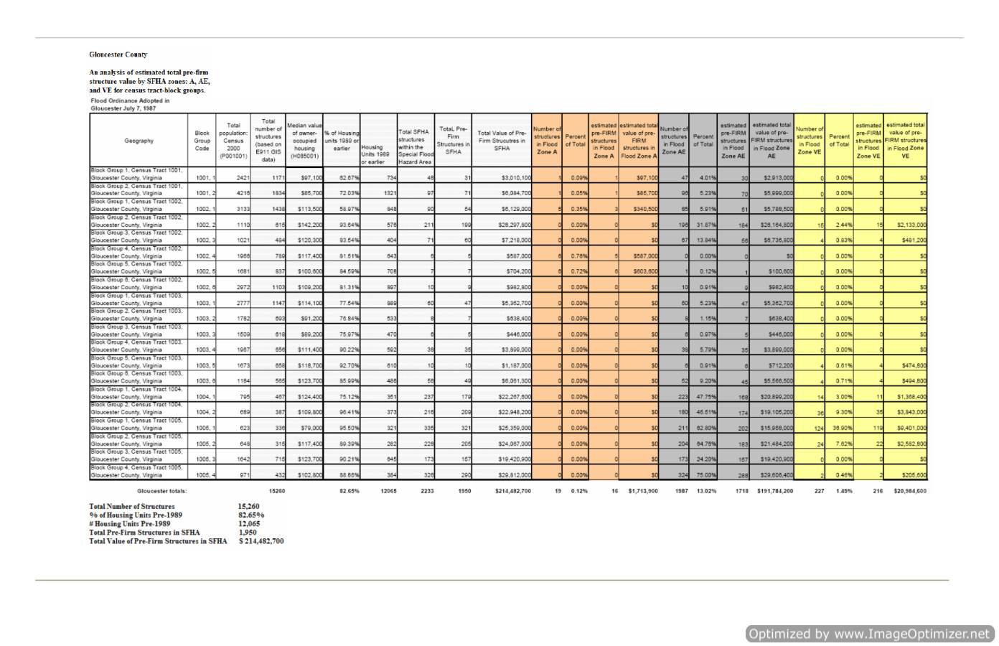
A Coastal Floodplain Management Plan for Gloucester County
77
July 2009
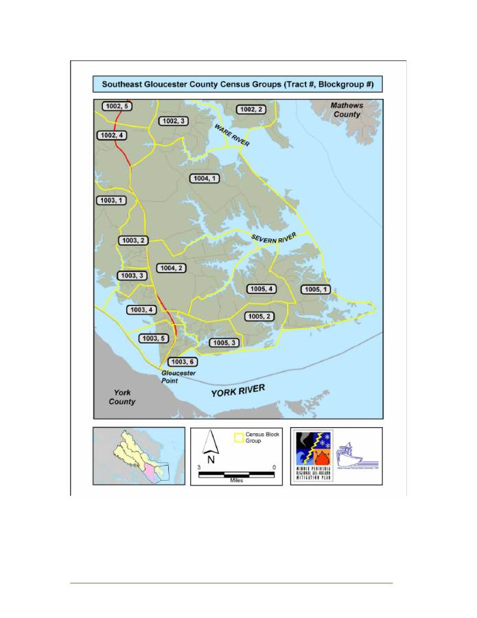
A Coastal Floodplain Management Plan for Gloucester County
78
July 2009
Source: Middle Peninsula Planning District Commission, 2005
A Coastal Floodplain Management Plan for Gloucester County
79
July 2009
Appendix C: VDOT Elevation Study on Select Roads in Gloucester County VA
TO: Christopher Perez
FROM: VDOT Central Office (Richmond VA) Engineering Staff
DATE: April 20, 2007
Anticipated Flood Tide Levels for the Roadways in Gloucester County’s Southeastern Portion
This report is an investigation of the anticipated flood tide levels for the southeastern portion of the
county’s roadways (plus the Rte. 17, north approach to the Coleman Bridge). Everything was based on the
FEMA Flood Insurance Study (FIS) for Gloucester County (dated August 4, 1987) and available Flood
Insurance Rate Map (FIRM).
VDOT’s usual criteria for protection of its roadway facilities against flooding is to have the lowest edge of
shoulder elevation of the roadway prism 18" minimum above the prescribed level of flood protection. The
prescribed level of protection usually would be as follows: 10-yr. for secondaries and 25-yr. for primaries
and arterials.
The elevations cited in this report are based on the above. Tidal flooding in the southeastern portion of the
county can take the form of either essentially stillwater or stillwater plus wave action, depending on how
close the area in question is to open water. Inland areas are typically only subject to stillwater tidal action,
whereas exposed areas (in this case those areas closer to the York River and/or the Bay) are also subject to
wave action (in which case anticipated wave crests are added to the stillwater tide levels). FEMA, with
their FIRM maps, identifies those areas of stillwater only (Zone AE designations) as well as those areas
subject to wave action (Zone VE designations). Some of the roadways investigated had segments that fell
in both zones and therefore different recommended elevations have been shown. The stillwater elevations
for Gloucester County as shown in the FIS book were as follows:
FLOOD FREQUENCY (YRS.)
FLOOD ELEVATION (FT.)*
10
5.0
25**
5.8**
50
6.5
100
7.3
* Based on North American Vertical Datum of 1922 (NGVD '29 datum)
** Mathematical interpolations of these values, as the FIS book didn't show them.
The wave crests that can be experienced in open areas can raise the above values up to 3 additional ft. It
should be noted that wave crest values were only provided for the 100-yr. flood event but, for the purposes
of this report, the report assumed that the same wave crests would also apply to a 10 and 25-yr. event where
applicable. This is probably conservative but should be satisfactory for estimating purposes.
Below is the report which deals with each individual roadway and is predicated on the above.
George Washington Memorial Highway (Rte. 17)
Because this is considered to be an emergency/ hurricane evacuation route, the roadway should be above a
100-yr. flood tide. If the roadway is not above a 100 yr flood tide, then in order to get the roadway above a
100-yr. flood tide level, the lowest approaches to the Coleman Bridge will need to be raised such that the
lowest shoulder will be at or above elevation 12.5.
Maryus Road (Rte. 649)
To ensure the roadway is above a 10-yr. flood tide level the reach from the intersection with Rte. 648
eastwards to the end of state maintenance will need to be raised such that the lowest shoulder will be at or
above elevation 9. For the intersection of Rte. 653 eastwards to the intersection of Rte. 648 to be above a 10
yr flood tide level the section will need to be raised such that the lowest shoulder will be at or above
elevation 7.

A Coastal Floodplain Management Plan for Gloucester County
80
July 2009
Greate Road (Rte. 1208)
To get the roadway above a 10-yr. flood tide level that portion of the roadway in close proximity to the
York River will need to be raised such that the lowest shoulder will be at or above elevation 9.
Guinea Road (Rte. 216)
To get the roadway above a 25-yr. flood tide level the entire roadway grade from its intersection with Rte.
17 eastwards to its intersection with Rte. 649 & 653 will need to be raised such that the lowest shoulder
elevation will be at or above elevation 8.
Mark Pine Road (Rte. 643)
Nearly the entire length of the roadway will have to raised such that the lowest shoulder elevation is at or
above elevation 7.
Little England Road (Rte. 642)
To get the roadway above a 10-yr. flood tide level that portion of the roadway nearest the York River (the
western end) will need to be raised such that the lowest shoulder will be at or above elevation 7.
Cuba road (Rte. 643)
The Easternmost end of the roadway will have to be raised such that the lowest shoulder will be at or above
elevation 7. Just to the west, where the roadway makes a sharp bend to the northeast, it will have to be
raised such that the lowest shoulder will be at or above elevation 7. Further west at Cuba Road’s
intersection with Rte. 642 the roadway will have to be raised such that the lowest shoulder will be at or
above elevation 7.
Kings Creek Road (Rte. 653)
To get the roadway above a 10-yr. flood tide level, the following will need to be done. The roadway from
the intersection with Rte. 652 northeastwards to the end of state maintenance will need to have the entire
grade raised such that the edge of the lowest shoulder elevation will be at or above elevation 9. From the
intersection with Rte. 652 southwestwards to the intersection of Rte. 649, the entire grade will need to be
raised such that the lowest shoulder elevation will be at or above elevation 7.
A Coastal Floodplain Management Plan for Gloucester County
81
July 2009
Appendix D: Saffir-Simpson Hurricane Damage Scale
The Saffir-Simpson Hurricane Scale is a 1-5 rating based on the hurricane's present intensity. This is used
to give an estimate of the potential property damage and flooding expected along the coast from a hurricane
landfall. Wind speed is the determining factor in the scale, as storm surge values are highly dependent on
the slope of the continental shelf and the shape of the coastline, in the landfall region. Note that all winds
are using the U.S. 1-minute average.
Hurricane Category Sustained Winds (mph) Storm Surge Damage Potential
Tropical Storm > 40 mph
1 74 – 95 4 – 5 ft Minimal
2 96 – 110 6 – 8 ft Moderate
3 111 - 130 9 – 12 ft Extensive
4 131 - 155 13 - 18 ft Extreme
5 > 155 > 18 + Catastrophic
Category 1
A Category 1 hurricane has storm surges 4-5 feet above normal. It poses little to no damage to building
structures and minimal damage to unanchored mobile homes, shrubbery, and trees. There may be minor
pier damage and coastal road flooding.
Category 2
A Category 2 hurricane has storm surges 6-8 feet above normal. It poses considerable damage to mobile
homes, piers, signs, shrubbery, and tress. Damages to building structures include roof damage, doors and
windows. Notable impacts include coastal and low lying areas flood 2 - 4 hours before arrival of the
hurricane in.
Category 3
A Category 3 hurricane has storm surges 9-12 feet above normal. There will be structural damage to small
residences and utility buildings. Extreme damage to mobile homes, trees, and shrubbery. Notable impacts
include flooding of low lying areas 3-5 hours before the arrival of the hurricane. Coastal flooding has a
high potential to destroy small building structures as well as significantly damage larger structures through
debris from floating debris. Land that is lower than 5 feet above mean sea level can be flooded 8 or more
miles inland.
Category 4
A Category 4 hurricane has storm surges 13-18 feet above normal. These storms have extreme damage
potential. Building structures may experience extensive curtain-wall failures with extensive damage to
roofs, doors and windows of small residences. Major damage will occur to lower floors of structures near
the shore. Terrain lower than 10 feet above sea level may be flooded requiring massive evacuation of
residential areas as far inland as 6 miles. Complete destruction of mobile homes, as well as major damage
to shrubs, trees, and all signs. Notable impacts include flooding of low lying areas 3-5 hours before arrival
of the hurricane.
Category 5
A Category 5 hurricane has storm surges 18 feet above normal. These storms have catastrophic damage
potential. Complete roof failure of many residences and industrial buildings. Severe and extensive window
and door damage is expected. Some complete building failures with small utility buildings may be blown
over or away. All shrubs, trees, and signs will be blown down. Complete destruction of mobile homes.
Low-lying areas are flooded 3-5 hours before arrival of the hurricane. Major damage to lower floors of all
structures located less than 15 ft above sea level and within 500 yards of the shoreline. Massive evacuation
of residential areas on low ground within 5-10 miles of the shoreline may be required.
Source: NOAA National Hurricane Center
A Coastal Floodplain Management Plan for Gloucester County
82
July 2009
Appendix E: Gloucester County Growth Rate
Gloucester County Growth Rate
Population
Percent Change
Percent
Change
1980
1990
2000
2010
2020
2030
1980-1990
1990-2000
Average
20,107 30,131 34,780
38,900
42,700
46,199
49.90%
15.40%
32.60%
Source: United States Census Bureau, 2000
A Coastal Floodplain Management Plan for Gloucester County
83
July 2009
Appendix F: VDOT Road Closure Data for Gloucester County (1999 – 2006)
TO: Christopher Perez
FROM: VDOT Staff
DATE: April 2, 2007
Road Closures in Gloucester,
VA: Hurricane Floyd
9/18/1999
Route From To
36
605
606
610
612
614 (at Mill Pond)
614 (at Petsworth Church Rd)
616
629 (at Rt. 728)
637 (end of state maintenance)
1246 (end of state maintenance)
Road Closures in Gloucester,
VA: Severe Storm
10/7/2006
Route From To
662 at bridge
1208 at boat landing
Road Closures in Gloucester,
VA: Hurricane Isabel
9/18/2003
Route From To
601
602
605
606
608
609
610
611
617
621
625
628
630
631
633
635
648
678
Road Closures in Gloucester,
VA: Hurricane Ernesto
9/1/2006
Route From To
198 Rt. 17 Rt. 610
606
614
662
666
Great Rd
Maryus Rd
Road Closures in Gloucester,
VA: Severe Storm
11/17/2006
Route From To
611
614
625 at Rt 623
662
701
1208
A Coastal Floodplain Management Plan for Gloucester County
84
July 2009
Appendix G: Documentation of the Planning Process
Planning Committee Members
1) Paul Koll: Gloucester County Building Official
2) Christopher Perez: Gloucester County Planner and then Graduate student in the
Masters of Urban Regional Planning (MURP) Program at Virginia Commonwealth
University (VCU)
3) Anne Ducey-Ortiz, Gloucester County Director of Planning
4) Jay Scudder: former Director of Planning
5) Mark Westfall: former Emergency Management Coordinator
6) Dr. Mort Gulak: Professor of Urban Studies and Planning, L. Douglas Wilder School
of Government and Public Affairs at Virginia Commonwealth University (VCU)
7) Dr. Avrum J. Shriar: Professor of Urban Studies and Planning, L. Douglas Wilder
School of Government and Public Affairs at Virginia Commonwealth University (VCU)
Time Table of Events during the Planning Process
While these meetings are not the entire sum of planning efforts during the development of the Floodplain
Management Plan, they represent a comprehensive outline of the steps throughout the process.
January 25, 2007 @ 3:30pm
Held an initial meeting between all Floodplain Management Plan planning committee
members to discuss the role of the committee in the formation of the plan, follow up
committee meetings to discuss the plans’ progress, the perimeters of the plan, the various
agencies that needed to be involved, the necessity for public involvement, various
resources to aid in the risk assessment of the area, as well as the time frame for the plans
completion and projected adoption date.
May 10, 2007 @ 7pm
Community meeting at Achilles Elementary School to gain citizen involvement and
community awareness (Below is a cutout of the meeting advertisement).
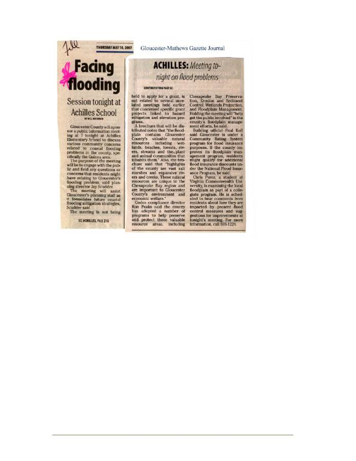
A Coastal Floodplain Management Plan for Gloucester County
85
July 2009
Source: Gloucester-Mathews Gazette Journal
A Coastal Floodplain Management Plan for Gloucester County
86
July 2009
Source: Gloucester-Mathews Gazette Journal
May 2007
Formulated Draft Goals and Objectives for Floodplain Management Plan
August 2007
Provided a working draft of the Floodplain Management Plan, which Committee
Members edited and strengthened through numerous meetings and editing sessions.
A Coastal Floodplain Management Plan for Gloucester County
87
July 2009
Oct 23, 2007 @ 7pm
Follow up Community Meeting at Achilles Elementary School to gain citizen
involvement and community awareness (Below is a cutout of the meeting advertisement).
Source: Gloucester-Mathews Gazette Journal
November 19, 2007
Planner, Christopher Perez met individually with each committee member to discuss the
current draft of the plan and provide any comments or suggestions.
December 13, 2007
Dissertation meeting at VCU to formally present the Plan to the VCU Master of Urban
and Regional Planning Program.
February 22, 2008
Floodplain Management Plan sent to the ISO review board.
April 18, 2008
ISO 510 review received.

A Coastal Floodplain Management Plan for Gloucester County
88
July 2009
April 3, 2008 @ 7:30pm
Floodplain Management Plan Presentation to the Planning Commission (below is the
minutes from the meeting).
AT A MEETING OF THE GLOUCESTER COUNTY PLANNING COMMISSION
HELD THURSDAY, APRIL 3, 2008 IN THE COLONIAL COURTHOUSE, 6504
MAIN STREET, GLOUCESTER, VIRGINIA
THERE WERE PRESENT:
Thomas Arnold
Kenneth Richardson
William Rodgers
Michelle Ressler
Michael Winebarger
Natalie Johnson
Hal McVey III
Keith Belvin, Vice Chairman
Wyvonnia
Carter
THERE
BEING
ABSENT:
Eric Weisel
Phillip Bazzani, Chairman
Laurence Wilkinson
Mark Strawn
ALSO IN ATTENDANCE:
Jay Scudder, Director of Planning
Anne Ducey-Ortiz, Planner III
Christopher
Perez,
Planner
I
IN RE:
MEETING CONVENED
Keith Belvin, Vice Chairman, called the April 3, 2008 meeting of the Gloucester County
Planning Commission to order at 7:30 P.M. Roll call established a quorum was present.
IN RE:
CONSENT AGENDA
The Consent Agenda consists of 1) Minutes of February 19, 2008 Meeting; 2) Minutes of
March 6, 2008 Meeting; 3) Application(s) before the BZA in April; 4) Housing Report –
February 2008
Mr. Winebarger stated that he had a correction for the March 6, 2008 meeting minutes.
He noted that a statement made by Mr. Rodgers right before adjournment was not put in
the minutes and he would like it added, verbatim. The statement is as follows:
“Actually what Eric said, and all, is right, in fact, we’ve written into our rules of
procedures, we did not follow it tonight with the first subdivision, we did do it the last
A Coastal Floodplain Management Plan for Gloucester County
89
July 2009
meeting before we started on Bedford Falls and that is to make the statement that we are
strictly looking, to look at it, to be sure it passes, everything in the ordinance. If we can
make recommendations, and we’ve gotten some things by having these reviews, we’ve
gotten some things fixed in developments that although they met the ordinance
completely, but a little extras, by having it in here and I think that’s good, I think we need
to have it in there, also gives us an opportunity to see what’s going on and see where we
need to change the ordinance.”
A motion to accept the Consent Agenda with changes was made by Mr. Rodgers,
seconded by Ms. Ressler and carried by a unanimous voice vote.
IN RE: PUBLIC COMMENT
There being no concerns or comments expressed by the public, the Vice Chairman closed
the floor to public comment.
IN RE: NEW BUSINESS
A. Floodplain Management Plan
Mr. Perez gave a power point presentation:
Gloucester County Floodplain Management Plan
Background –
In 1987, Gloucester County became a participating community in FEMA’s
National Flood Insurance Program (NFIP) which enables property owners to
obtain federally backed flood insurance.
Shortly after the County joined the Community Rating System (CRS) program.
The program modifies annual premiums based on the participating community’s
efforts to reduce future flood damage in the area.
In 1994, Gloucester County earned a Class 9 status in the Community Rating
System (CRS) program.
5% off annual premiums.
There are approximately 1,415 flood insurance policy holder’s within the County.
To gain further reductions in flood insurance policy premiums (up to 15%) the
county must gain credits that will qualify the locality at a lower CRS rating.
One method of acquiring CRS credit is through the development of a floodplain
management plan for the county.
What is a Floodplain Management Plan?

A Coastal Floodplain Management Plan for Gloucester County
90
July 2009
A Floodplain Management Plan analyzes the causes of coastal flooding in the County
and identifies the vulnerabilities within the community.
The plan also documents and analyzes the County’s existing coastal flood management
practices and provides feasible solutions to strengthen the overall coastal flood
management system, intending to lessen the amount of damage caused by coastal
flooding.
Note: It is not the purpose or the intent of this plan to commit the county to large
public expenditures.
Vulnerabilities within the Community
- Potential Property Damage from Storm Surge
- Repetitive Loss Areas
- Vulnerable Populations
Age, Disability, and Income Levels
- Critical Facilities
Police Station, Fire and Rescue, Government Buildings, Schools and Shelters,
Hospitals, Utilities, and Roads,
- Safety and Health Hazards
Mitigation Strategies
1) Structural Improvement Activities – Road Improvements
– Reservoir protection
2) Preventative Measures – Planning and Zoning
– Building Regulations
– Flood Development Regulations.
3) Property Protection Measures – Acquisition and elevation of property
– Purchasing flood insurance
4) Public Information Measures – Community Educational Outreach
Programs
– Public Libraries and the County Website
– Technical Assistance
5) Emergency Services Measures – Hazard Identification, Warning, Response,
and Recovery Efforts.
6) Natural Resource Protection Measures – a special type of mitigation activity
that aims at preserving or restoring natural areas.
Where are we?
The Initial Draft of the Floodplain Management Plan
ISO review board *
Comprehensive Plan Steering Committee
Planning Commission
Board of Supervisors
A Coastal Floodplain Management Plan for Gloucester County
91
July 2009
End of Presentation
Mr. Winebarger asked who the ISO review board was.
Mr. Richardson stated the Insurance Services Organization, the same group that rates fire
departments.
Ms. Johnson asked what this really does once it is adopted, does it require the county or
the citizens to do anything?
Mr. Perez stated that it does not officially require the county to do anything. He stated
that the plan tells us what our weaknesses are in the county, why we are having flooding
issues, who is vulnerable, and what we are currently doing and how we could make that
stronger.
Mr. Scudder stated that with the FEMA programs the county has probably received
within the range of 3.6 million dollars, through the Hazard Mitigation Program. He noted
that there is a Pre-Hazard Mitigation Program that is an allocation of money each year,
and jurisdictions that choose to participate can take advantage of those programs. He
stated that Gloucester County has been participating in both of those programs for years.
He stated that the direct benefit of the citizens from this Floodplain Management Plan is
to get a higher rating from CRS with will reduce flood insurance premiums for the
residents.
Mr. Rodgers asked if just having the plan in place actually improves our rating from a 9
to something like an 8 or a 7.
Mr. Scudder stated that just having to plan and meeting the objectives reduces the
insurance premium.
Mr. Winebarger asked how far in the 1-10 scale will Gloucester County have to move to
increase or savings from the current 5%.
Mr. Richardson stated that from what he as seen there is no real guidelines to determine
what you get for different things you do.
Dr. Belvin suggested to Mr. Perez that after the ISO review board has approved this
document, it be forwarded to the Planning Commission.
IN RE:
ADJOURNMENT
July 2008 –May 2009
Collect, organize, and edit the draft Floodplain Management Plan, in preparation to have
the Board of Supervisors review the plan and ultimately adopt it.
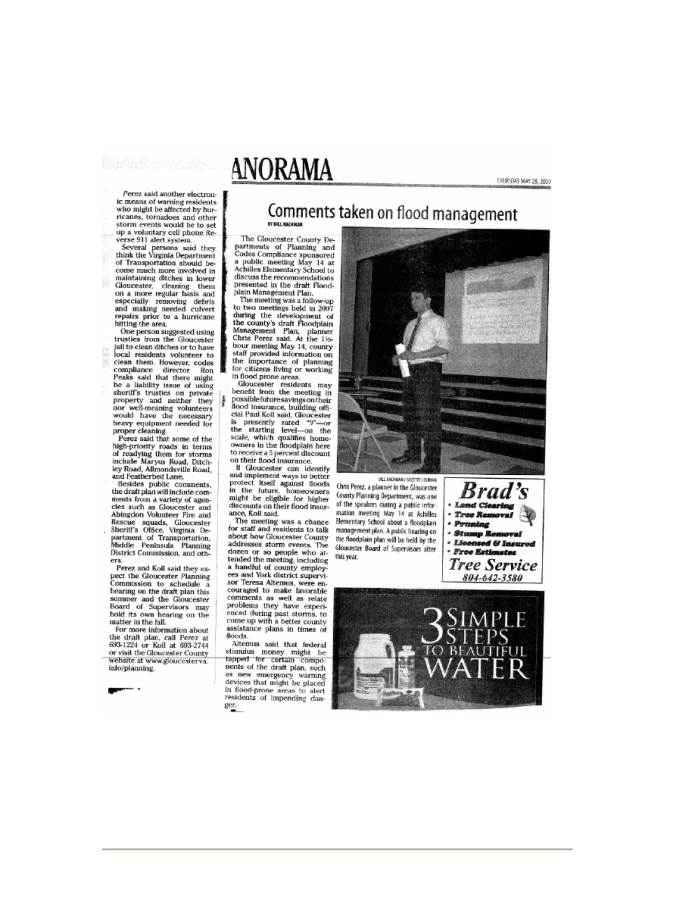
A Coastal Floodplain Management Plan for Gloucester County
92
July 2009
May 14, 2009 @ 7pm
The third follow up Community Meeting at Achilles Elementary School was held to
review the draft floodplain management plan and gain citizen input (Below is a cutout of
follow-up article of the meeting in the Gloucester-Mathews Gazette Journal).
Source: Gloucester-Mathews Gazette Journal
June 2009 – September 2009
Formal Adoption Process
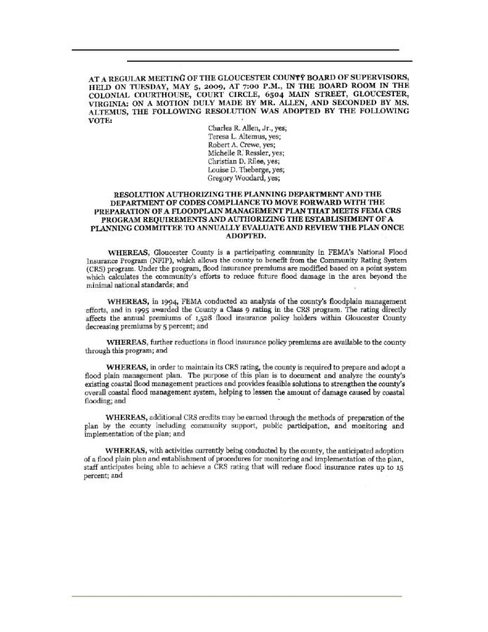
A Coastal Floodplain Management Plan for Gloucester County
93
July 2009
Appendix H: Board of Supervisor’s Resolution Authorizing the Preparation of a
Floodplain Management Plan and Establishing a Planning Committee
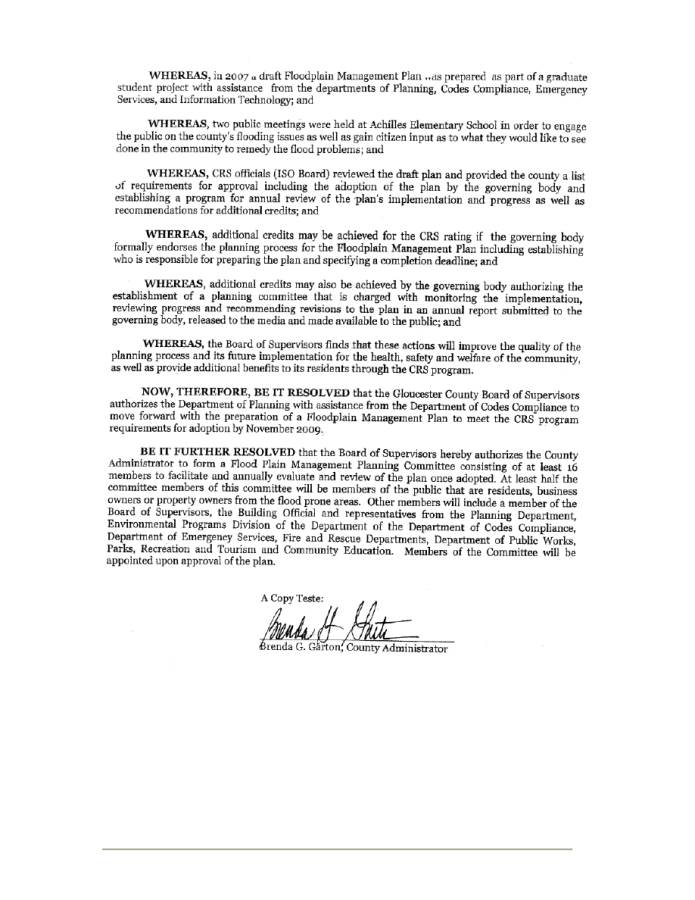
A Coastal Floodplain Management Plan for Gloucester County
94
July 2009
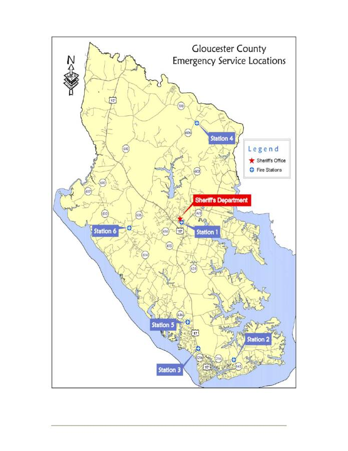
A Coastal Floodplain Management Plan for Gloucester County
95
July 2009
Appendix I: Emergency Service Locations Map
Source: Gloucester County Information Technology/ GIS Department.